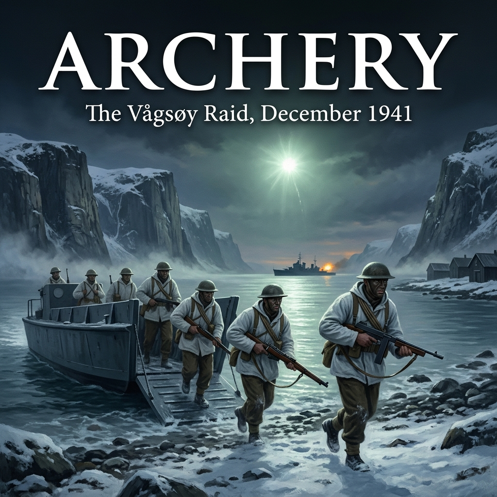

London, 27 October – 12 November 1941
The blackout curtains at 1A Richmond Terrace were heavy, smelling of damp wool and old coal smoke. Outside, Whitehall was an ink-black trench in the autumn rain, but inside the headquarters of Combined Operations, the electric lights burned through the day and night without interruption.
Captain Lord Louis Mountbatten had occupied the Chief’s office for less than twenty-four hours. His predecessor, the fiery and aging Admiral of the Fleet Sir Roger Keyes, had been forced out after months of bitter jurisdictional bickering with the Chiefs of Staff Committee. Keyes had demanded grand, large-scale assaults against fortified redoubts—operations like the seizure of the Canary Islands or Pantelleria—that the Admiralty and War Office simply lacked the landing craft, shipping, and air cover to sustain. When the friction became intolerable, Winston Churchill removed him.
Churchill’s handwritten directive to Mountbatten, delivered upon his appointment as Adviser on Combined Operations, lay flat across the blotter:
You are to continue the commando raids upon the enemy-occupied coasts... The whole coast of Europe must be made to feel insecure. A reign of terror must be established across the seaboard.
Mountbatten stood over the large oak table in the centre of the map room. Around him stood his small inner planning staff, including Brigadier J.C. Haydon, commander of the Special Service Brigade, and Captain John Hughes-Hallett of the Royal Navy. Laid between them was a long strip chart of the western Norwegian littoral, its labyrinthine network of fjords, sounds, and skerries rendered in meticulous Admiralty hydrographic ink.
"Keyes wanted operations that could alter the course of the war in a single afternoon," Mountbatten said, his voice clipped and precise. "The Chiefs will not give us the capital ships for that, and the Prime Minister knows it. What we need is an operational template that works. Navy, Commando troops, and the Royal Air Force striking in complete synchrony. A raid large enough to cause serious damage, compact enough to withdraw before the Luftwaffe can concentrate from Stavanger and Herdla."
Brigadier Haydon leaned forward, his knuckles resting on the chart glass. "What scale of troop commitment are we authorised to plan for?"
"A battalion equivalent," Mountbatten replied. "Five to six hundred men. No more. The shipping ceiling is two assault transports and four to five escort destroyers. If we take more than that, Admiral Tovey at Scapa Flow will veto the deployment of his cruisers."
Haydon looked down at the map. "Then we cannot touch the major ports. Bergen, Trondheim, and Kristiansand are out. Their coastal batteries are too heavy, and their fighter cover is within ten minutes' scrambled flight time."
"Agreed," Mountbatten said. "We look for a chokepoint. Somewhere along the Indreleia."
The Indreleia—the Inner Lead—was the deep, sheltered sea passage running inside the coastal islands along nearly the entire length of Norway. Through this channel moved the economic lifeblood of the German occupation: thousands of tons of high-grade Swedish iron ore shipped down from Narvik, pyrites, timber, and massive consignments of fish oil.
A naval intelligence officer stepped forward, laying a series of oblique aerial reconnaissance photographs across the charts. The photographs had been taken by high-altitude PRU Spitfires flying out of RAF Wick in northern Scotland.
"Here, sir," the intelligence officer said, his finger tapping a jagged indentation at latitude 61 degrees 55 minutes North. "Nordfjord. Specifically, the island of Vågsøy."
Mountbatten bent down to inspect the glossy prints. The terrain looked forbidding: vertical granite cliffs falling sheer into black water, capped by patchy early-winter snow.
"Give me the military geography," Mountbatten said.
"The main settlement is South Vågsøy—known locally as Måløy," the officer said. "It sits on a narrow ledge of land between the cliffs and the Ulvesund. Across the sound, barely a hundred and twenty yards wide, is a small detached islet: Måløy Island."
"Defences?"
"Our reconnaissance and Norwegian Section reports confirm the Germans have turned Måløy Island into a fortified strongpoint. There is an active coastal artillery battery—four French-made 13-centimetre guns manned by the German Army Coastal Artillery. They command the fairway completely. In the town itself, there is an infantry garrison from the 181st Infantry Division. In all, roughly one hundred and fifty to two hundred men."
Haydon studied the photograph of the town. "It is a ribbon development. One single road, pinched between the cliff face and the water for nearly a mile. If our people go ashore there, they cannot maneuver around the flanks. They will have to punch straight down the axis of the street."
"They will," Mountbatten agreed. "What makes it worth the casualty risk?"
The intelligence officer turned to a logistics ledger. "The factories, sir. Vågsøy is a major industrial processing hub for herring oil and fish meal. The Firda Canning Factory, the cold-storage plants, and the processing vats produce thousands of barrels of fish oil every month. The Germans ship it directly to Germany. It provides vitamin concentrates for their armed forces and glycerin for high-explosive production. Furthermore, because of the narrows at Ulvesund, German merchant shipping anchors in the sound to wait for tidal currents and daylight. If we hit Vågsøy, we destroy the factories, eliminate the coastal battery, and catch their coastal convoys at anchor."
"What about German air strength?" Haydon asked.
"The nearest operational Luftwaffe fighter fields are Herdla, just north of Bergen, and Sola near Stavanger. Herdla is within eighty miles. If they scramble Messerschmitt 109s or Ju 88s, they can be over the target in under half an hour once alerted."
Mountbatten stood straight, adjusting his cuffs. "Then the alert must be divided. We will not run this as an isolated raid."
He pulled another chart onto the table, this one depicting the Lofoten Islands, hundreds of miles to the north.
"We will launch twin operations," Mountbatten said. "Operation Anklet in the north against the Lofotens, using No. 12 Commando and a force of Polish and British destroyers. That will distract German Naval Group North and draw their reconnaissance aircraft northward. Operation Archery will be the main hammer: Vågsøy."
"Who commands the ground force?" Haydon asked.
"Your recommendation, Brigadier."
"No. 3 Commando," Haydon said without hesitation. "Under Major John Durnford-Slater. They are fully worked up, aggressive, and currently based in the Highlands. We will attach elements of No. 2 Commando under Jack Churchill, a section of Royal Engineers for the demolitions, and a medical unit."
"And the Norwegians?" Mountbatten asked. "This is their soil. We do not land in Norway without their men at the front of the assault."
"Captain Martin Linge's unit," Haydon said. "Norwegian Independent Company No. 1. Linge will lead a detachment of his best men personally to act as interpreters, guides, and front-line combatants."
Mountbatten looked around the table. The planning officers were already penciling draft coordinates onto their pads.
"Rear-Admiral Harold Burrough will have overall naval command aboard HMS Kenya," Mountbatten concluded. "The timetable is tight. Rehearsals will take place in the Scottish firths in December. The strike date will depend on the moon and tide, but we aim for late December. Keep the security perimeter absolute. From this moment on, the operation is code-named Archery."
The meeting dissolved into the rustle of maps being rolled into cardboard tubes. Outside, the London rain continued to fall into the blacked-out streets, while hundreds of miles to the north, across the frozen swells of the North Sea, the garrison at Vågsøy prepared for a routine winter rotation, entirely unaware that their names had just been committed to paper.
Scottish Highlands, Mid-November – Early December 1941
The frost on the heather around Dornoch and the coastal slopes of Largs did not thaw at noon. It remained as a brittle, white crust, crunching under the hobnailed soles of British ammunition boots.
Major John Durnford-Slater stood with his coat collar turned up against the sleet, watch in hand, observing Troop 3 clear a steep gully. They were using live ammunition. Short, three-round bursts from .45-calibre Thompson submachine guns tore into timber targets pegged into the hillside; behind the lead section, a two-man Bren team dropped into the scree, spraying copper-jacketed .303 rounds into the rocks to keep imaginary snipers pinned.
Durnford-Slater had transferred from the Royal Artillery to the Commandos seeking active operational service, but he ran No. 3 Commando with a gunner’s cold calculation. He did not believe in heroic flourishes; he believed in volume of fire, violent momentum, and exact timetables.
"Watch your intervals on the scree," Durnford-Slater barked as a sergeant scrambled past, stone dust smoking from the rock face above him. "If a German MG34 catches you bunched like that, you won't live long enough to draw a toggle rope."
A few yards back, leaning against a damp birch trunk with a canvas-wrapped package under his arm, was his second-in-command, Major Jack Churchill. Commissioned into the Manchester Regiment before volunteering for special service, Churchill was Durnford-Slater’s opposite in temperament: eccentric, fiercely romantic, and completely devoid of fear. While Durnford-Slater carried a standard-issue Webley and focused on fire-plans, Churchill had already gained notoriety in France for carrying a Scottish broadsword, a longbow, and bagpipes into battle.
"The men are moving well, John," Churchill said, his voice cheerful despite the bone-chilling mist drifting off the water. "A bit of frost puts steel into the blood."
"They are moving well on Scottish grass, Jack," Durnford-Slater replied, snapping his pocket watch shut. "In Norway, the drop from the landing craft will be straight into freezing brine, and the ground is sheer granite. If they hesitate on the shingle, the entire line folds."
To bring No. 3 Commando up to the strength required for the assault, two full troops—Troops 4 and 6 of No. 2 Commando—had been detached and placed under Durnford-Slater's operational command, along with specialists from the Royal Engineers and the Royal Army Medical Corps.
A third officer walked up the slope toward them, stepping deliberately over the frozen ruts. Captain Martin Linge was forty-seven years old, a former stage and screen actor in Oslo who had fought the German invaders through the snow of Åndalsnes in the spring of 1940. Wounded, evacuated to England, and recruited by the Special Operations Executive, he was now the commanding officer of Norwegian Independent Company No. 1—Kompani Linge.
Linge wore British battle dress, but on his shoulders were the embroidered words: NORWAY. His face was lean, his eyes watchful. Behind him, twelve of his Norwegian volunteers stood in loose formation, watching the British troops fire.
"Captain Linge," Durnford-Slater acknowledged, offering a gloved hand. "Your men are ready for the cliff work?"
"My men were born on cliffs like these, Major," Linge said quietly. His English was refined, carried with an actor’s measured cadence. "They do not need to be taught how to climb Norwegian rock. What they need is to know how your men behave when the wooden houses begin to burn."
Durnford-Slater looked at him closely. "We are going into an inhabited town. We understand that."
"Understanding it from a paper briefing is not the same as kicking open a kitchen door," Linge said. "The people in Måløy are loyal Norwegians, but they are terrified. They have lived under the heel of the 181st Division for eighteen months. When your men breach the doors, there will be children and old women in the cellars. If your soldiers throw grenades blindly into every dark basement, we will kill the very people we have sworn to liberate."
"My orders are to clear the street, Captain," Durnford-Slater said, his tone flat. "Snipers will use those timber houses. If a building shoots at my men, my men will reduce it with ammonal and Thompsons. We cannot afford sentiment when an MG34 is firing through the floorboards."
"I am not asking for sentiment," Linge replied steadily. "I am asking for discipline. My Norwegians will run at the point of your troops. Let us be the ones to identify the buildings, speak to the people, and take the surrender of the collaborators. If a traitor needs to be dealt with, let Norwegian law handle it."
Durnford-Slater nodded once. "Agreed. Your people take the lead into the civilian sections. But if a house answers with cordite, it becomes an enemy strongpoint. No exceptions."
Further down the slope, by a row of parked Bedford 3-ton lorries, Lieutenant Vernon of the Royal Engineers was supervising the offloading of heavy wooden crates stenciled in yellow: AMMONAL - HIGH EXPLOSIVE and CORDITE SLABS.
Vernon’s detachment from 101 Troop had been assigned the systematic destruction of Vågsøy’s economic engine. He was consulting a series of sketches drawn from pre-war industrial registries and aerial photographs.
"The herring oil vats require internal charges," Vernon explained to his demolition sergeants, tapping the charcoal drawing of the Firda factory. "You don't blast the outside steel casing; that merely vents the pressure. You set the charges against the base flanges, tamp them with wet sandbags, and blow the vats inward. The burning oil will do the rest. The cold-storage ammonia plants are our second priority. Crack the cooling coils, and the gas will make the entire harbour terminal uninhabitable for weeks."
The training escalated over the next ten days into round-the-clock drills. The men were issued special equipment: white snow-camouflage smocks to be worn over thick woolen battle dress, rubber-soled climbing boots, toggle ropes for scaling sea-walls, and phosphorus smoke grenades. They were given physical tests designed to exhaust them, followed immediately by rapid-fire live shooting matches.
Security was airtight. To the rank and file, the mission was known only as Target X. The men knew they were going north because of the cold-weather gear and the Norwegian soldiers attached to their platoons, but whether they were striking Narvik, the Shetlands, or Trondheim remained a matter of mess-tent rumors.
On 15 December, the movement orders arrived.
The troops were assembled in the drill hall under armed guard. The lorries were backed in, tailgates down. Durnford-Slater stood before his officers and sergeants, holding the movement manifests.
"Gentlemen, the working-up period is finished," Durnford-Slater announced. "From this point onward, total operational censorship is in effect. Letters home are stopped. Telephones are disconnected. Personal kit is restricted to what you carry on your webbing."
He turned to Churchill, Linge, and the troop commanders.
"We board the trains tonight for the north of Scotland. By tomorrow evening, we embark aboard the transports. We will marry up with the fleet at Scapa Flow."
Outside, the engines of the Bedford lorries rumbled in the freezing dark, their exhaust pipes sending white plumes of steam into the Scottish night. The men slung their kitbags, shouldered their weapons, and filed out into the frost.
Scapa Flow, Orkney Islands, 22–24 December 1941
The Pentland Firth was running a steep, churning grey chop when the tenders brought the troops out into the vast anchorage of Scapa Flow.
Rising out of the leaden water like jagged iron islands were the capital ships of the Home Fleet: battleships, heavy cruisers, and long flotillas of destroyers lying at their buoys behind lines of floating anti-torpedo netting. The sky was low, swollen with snow that refused to fall, blending the grey sea into the grey hills of Hoy and Flotta.
The Commandos were ferried to their assault transports: HMS Prince Charles and HMS Prince Leopold. The two vessels were former Belgian cross-channel passenger ferries, requisitioned by the Admiralty and converted into Landing Ships Infantry (Small). Painted in streaks of Admiralty camouflage, their boat decks were fitted with Welin davits carrying eight Landing Craft Assault (LCAs) apiece.
The interior of the ships was a maze of narrow companionways, smelling of damp cork insulation, bilge water, and ship’s tea. The troops were crammed into converted passenger saloons where bunks had been torn out to make room for triple-tiered pipe-and-canvas berths.
Major John Durnford-Slater did not linger in his quarters aboard Prince Charles. A motor launch was already idling alongside to take him, Jack Churchill, and Captain Martin Linge across the anchorage to the light cruiser HMS Kenya, the flagship of Force Z.
Kenya was an 8,000-ton Fiji-class cruiser, bristling with twelve 6-inch guns in four triple turrets. Below the bridge, in the admiral's day cabin, Rear-Admiral Harold Martin Burrough stood by a chart table draped in green baize. With him was Brigadier J.C. Haydon, commander of the Special Service Brigade, and Captain H.T. Armstrong of HMS Onslow, who would command the destroyer screen.
On the table rested a large, rectangular wooden box. Burrough lifted the plywood lid, revealing a painted plaster relief model of Vågsøy, sculpted from PRU aerial photographs.
"Here is your target, gentlemen," Burrough said without preamble. His hair was cropped short, his voice calm and measured. "South Vågsøy and the islet of Måløy."
Durnford-Slater, Churchill, and Linge gathered around the plaster model. The geography was brutal. The town was represented by miniature wooden blocks lining a thin strip between the sea and a sheer wall of grey plaster.
"The approach will be made in complete darkness," Burrough explained, running a thin timber pointer along the fjord entrance. "We will be guided to the exact mouth of Vågsfjord by the submarine HMS Tuna. She is already on station, lying off the Norwegian coast. At zero-six-zero-zero on the morning of the twenty-seventh, Tuna will surface and show a directional light to seaward. That light will be our landfall."
"What about coastal lookouts at the entrance?" Durnford-Slater asked.
"Our intelligence indicates no radar installations at the outer headlands," Burrough replied. "Visual watch posts only. If we enter in the dead of the morning watch, throttled back to twelve knots, we will be through the outer reaches before an alarm can be telephoned. By zero-eight-forty, Kenya and the destroyers will be in position off Måløy Island."
Burrough looked at Durnford-Slater. "Your landing craft will be lowered into the water while we are still underway, three miles out. The naval bombardment will open at zero-eight-forty-two with starshells to illuminate the targets, followed by nine minutes of concentrated six-inch high explosive into the Måløy battery. At zero-eight-fifty, RAF Hampdens will lay a smoke screen across the entrance to the bay to shield your landing craft as they hit the beaches."
"That leaves eight minutes from the first shot to the first boot on the shore," Durnford-Slater noted.
"Precisely," said Burrough. "If the Navy fires for ten minutes, we drop shells on your own assault craft. If we fire for seven, the German coastal gunners will recover from the blast and bring their four 13-centimetre guns to bear on your wooden ramps. The timing must be absolute."
Burrough then pointed northward, far beyond the wooden frame of the model.
"You should know that we are not going alone. At this moment, Rear-Admiral Hamilton is leading Force J—the cruiser Arethusa and four destroyers, carrying No. 12 Commando—north toward the Lofoten Islands for Operation Anklet. They will strike simultaneously. That will split the German naval command at Bergen and pull the Luftwaffe northward away from your withdrawal corridor."
Linge leaned over the model, his finger tracing the line of wooden blocks in South Vågsøy. "The German command post is here," he said, indicating a larger building near the centre of the waterfront. "The Ulvesund Hotel. If their commander has time to reach his telephone exchange, he can call in reinforcements from the north end of the island."
"Group 5 will take care of that, Captain," Durnford-Slater said. "A detachment lands at Rødberg, blows the coastal road, and severs every wire running north. Nothing will move between North and South Vågsøy."
"Very well," Burrough said, closing the meeting. "Check your weapons. Brief your subalterns down to section level using the plaster model, but keep the men confined to the troop decks. We sail tonight."
By late afternoon on 24 December—Christmas Eve—the winter twilight had deepened into ink.
Aboard Prince Charles, the Commandos sat on mess benches under yellow emergency bulbs. The smell of gun oil was thick as men wiped down their Thompson bolts, checked the springs of thirty-round stick magazines, and taped Mills bombs together for breaching charges. Jack Churchill walked between the mess tables, carrying his broadsword in a leather scabbard, casually checking the edges of his men's fighting knives against his thumb.
At 21:00, the warning horn sounded through the ships of Force Z.
Up on the bridge of Kenya, Burrough watched the red signal lamp blink from the flagship's yardarm to the destroyers Onslow, Oribi, Offa, and Chiddingfold. Across the water, anchor chains ground through hawseholes, bringing up foul mud from the bed of the Flow.
The ships fell into line-ahead formation. At the southern entrance of the anchorage, the heavy anti-submarine boom gates at Hoxa Sound were dragged back by tugs, the steel buoys clanking in the swell.
One by one, the cruiser, the two assault transports, and the four destroyers slipped through the gap into the black, rising swells of the open sea, turning their bows north-northeast toward the coast of Norway.
Sullom Voe, Shetland Islands, 25–26 December 1941
The open North Sea struck Force Z with the weight of a full winter gale.
Within two hours of clearing the boom gates of Scapa Flow, the wind backed to the northwest, driving forty-foot swells that broke green over the bows of the escort destroyers. For the two converted Belgian ferries, Prince Charles and Prince Leopold, the crossing became an ordeal of mechanical strain. Neither vessel had been designed for the deep Arctic rollers; they had high superstructures, shallow drafts, and the added top-weight of eight steel-and-plywood landing craft suspended from their Welin davits.
The ships rolled violently through thirty-degree arcs. Below decks, the heating systems failed to counteract the freezing condensation sweating down the steel bulkheads.
Inside the converted passenger saloons, the physical condition of the Commandos deteriorated rapidly. Men who had endured months of brutal physical conditioning in the Highlands were utterly incapacitated by violent seasickness. The stench of vomit, diesel oil, and wet wool filled the unventilated troop decks. Soldiers lay jammed against one another on the mess tables or curled on the deckplates, wedged between stanchions to keep from being thrown across the compartments as the ships pitched and plunged.
Up on the bridge of HMS Kenya, Rear-Admiral Burrough watched the two transports through spray-lashed bridge glass. The ships were wallowing badly, their screws repeatedly lifting clear of the water with a dull, shuddering vibration that could be heard across the convoy.
At 04:00 on 25 December—Christmas morning—Captain Armstrong of HMS Onslow signaled the flagship by directional lamp: the destroyers were taking heavy water over their forecastles, and the speed of advance had dropped below eight knots.
Burrough faced a ruinous tactical reality. If he forced the convoy through the gale, the force would arrive off the Norwegian coast scattered, late for the coordinated dawn strike, and with hundreds of Commandos too weak to stand, let alone storm fortified German positions. Furthermore, the violent rolling was straining the falls and gripes of the landing craft; if an LCA broke loose from its davits in the dark, it would smash itself to pieces against the hull.
Burrough made his decision. He flashed an order down the line: Alter course due north for Sullom Voe.
By midday on Christmas Day, Force Z crept through the narrow entrance of Yell Sound into Sullom Voe, the long, sheltered fjord cutting into the northern mainland of the Shetland Islands.
The transition was immediate. The immense ocean swell died away, replaced by the flat, leaden water of the sheltered anchorage. On either side, the barren, treeless hills of Shetland rose through the winter sleet, brown and desolate under a sky that barely offered four hours of murky twilight.
Aboard Prince Charles, the sudden cessation of rolling brought a slow, painful revival.
Major John Durnford-Slater came down the companionway into the troop mess. The air was thick and foul. Men were slowly sitting up, wiping faces grey with bile, checking their rifles for rust from the salt spray that had penetrated the hull seams.
"Get them up," Durnford-Slater told his troop officers. "Get the hatches open, scrape down the decks, and get hot tea into every man. We are twenty-four hours behind timetable."
Captain Martin Linge walked among his Norwegian soldiers. Several of them had managed to keep their footing through the gale; they were now helping the ship’s cooks haul five-gallon steel urns of hot tea and hard ship’s biscuits down the ladders.
"Merry Christmas, Captain," a private from Troop 3 muttered from a bench, clutching a tin mug with shaking, blue fingers.
"Merry Christmas, soldier," Linge said quietly. "Drink the tea. Tomorrow you will want all the strength in your arms."
Up on the boat deck, Lieutenant Vernon of the Royal Engineers and the naval beach parties were inspecting the landing craft. They worked in freezing rain, checking every inch of the suspension cables, greasing the winches, and testing the throttle cables of the twin Ford V8 engines that powered each LCA. Salt crust had caked over the steering cables; mechanics with paraffin rags and wire brushes scrubbed them clean down to the bare metal.
Aboard HMS Kenya, the wireless room was working under tight security. Burrough had to inform the Admiralty and RAF Coastal Command of the twenty-four-hour postponement without breaking operational radio silence to the extent that German naval monitoring stations (B-Dienst) in Norway could triangulate their position.
A high-priority, heavily enciphered short-signal was transmitted to the Commander-in-Chief Home Fleet, Admiral Sir John Tovey:
Operation Archery postponed by twenty-four hours due to weather. Zero-day now 27 December.
The signal rippled across the operational web:
Throughout the rest of 25 December and into the morning of 26 December, Force Z lay at anchor in Sullom Voe. The men were fed tinned bully beef, bread, and rum. In the mess decks, troop sergeants ran their men through final weapon inspections. Tommy gun extractors were oiled; Bren magazines were emptied, checked for dented feed lips, and re-bombed with thirty rounds apiece; hand grenades were checked to ensure split pins had not rusted in their sleeves.
By mid-afternoon on 26 December, the barometric pressure began to rise. The wind dropped from gale force to a stiff, steady breeze from the northwest.
At 16:00, with the northern darkness already complete, the anchor windlasses rumbled across the quiet water of Sullom Voe.
HMS Kenya led the column out, followed by Prince Charles, Prince Leopold, and the destroyers Onslow, Oribi, Offa, and Chiddingfold. As they cleared Yell Sound and met the open Atlantic once more, the swells were long and regular—heavy, but manageable.
The convoy turned east. Ahead lay three hundred miles of black ocean, and beyond it, the jagged coast of occupied Norway.
The North Sea, 26–27 December 1941
Force Z maintained fourteen knots into the east-northeast, driving through long, rolling swells beneath a low, unbroken ceiling of winter cloud.
Total blackout was enforced across all seven ships. Scuttles were dogged down and painted over with black bitumen; heavy double canvas curtains screened every companionway hatch; on the open decks, not a single match or cigarette was struck. The escorts—Onslow, Oribi, Offa, and Chiddingfold—steamed in screening positions, their hulls cutting white lines of bioluminescent foam across the dark sea.
Below decks on Prince Charles and Prince Leopold, the atmosphere was stifling. The damp heat generated by hundreds of bodies in heavy wool battle dress condensed on the cold overhead steel, dripping continuously onto the deckplates.
The men spent the night preparing for combat. Troop sergeants moved through the narrow messes distributing ammunition: cloth bandoliers of .303-inch ball for the Lee-Enfield rifles and Bren guns, and fifty-round cartons of .45 ACP for the Thompson submachine guns.
Every Commando had his ritual. Some stripped their weapons one final time, wiping the firing pins dry of oil so the Arctic cold would not congeal the lubricant and cause misfires. Others sat cross-legged with tins of burnt cork and cocoa fat, methodically blacking out the skin of their faces, ears, and necks. White snow-camouflage smocks were tied around torsos, their loose folds cinched by webbing belts carrying ammunition pouches, entrenching tools, and fighting knives. Each man carried a toggle rope—a six-foot length of stout cordage with an eye at one end and a wooden toggle at the other, designed to be linked together into scaling ladders for the Norwegian cliffs.
Major John Durnford-Slater sat at a small steel folding table in the orderly room of Prince Charles, checking off the five group manifests:
Captain Martin Linge sat on a timber crate across from him, cleaning the sights of his Colt .45 automatic pistol.
"Your men are ready, Martin?" Durnford-Slater asked.
"They have waited eighteen months for this night," Linge said. His voice was quiet, almost flat. "Some of them have family living within twenty miles of the target. They know what will happen if we fail. The Germans do not treat captured Norwegian volunteers as prisoners of war. We are shot as traitors."
"We do not intend to leave anyone behind," Durnford-Slater said.
Up on the darkened bridge of HMS Kenya, the physical tension was concentrated entirely on navigation.
Rear-Admiral Burrough stood beside Kenya’s commanding officer, Captain Michael Denny, and the cruiser’s navigating officer, bending over the dead-reckoning plot in the dim red glow of the chart table lamp.
Without radar operating on active search—transmissions could be detected by German shore listening stations—navigation across three hundred miles of open ocean was an exercise in pure deduction. The navigating officer had to calculate the set and drift of the Arctic currents, the push of the northwesterly gale, and the slight inaccuracies of magnetic compasses. If they were off by five miles to the north, they would drive into the jagged skerry reefs off Bremangerland; if they were five miles to the south, they would miss the entrance to the fjord entirely.
"Course alteration in ten minutes, sir," the navigating officer reported quietly. "That will bring us on the final approach vector for the outer leads."
"Keep a sharp watch forward, Captain Denny," Burrough ordered. "Lookouts on the bridge wings: double watches. The submarine should be on station."
HMS Tuna, commanded by Lieutenant Commander M.K. Cavenagh-Mainwaring, had spent the previous twenty-four hours submerged off the Norwegian coast, resting on the seabed through the gale. She was scheduled to surface at 06:00, navigate to an exact geographical coordinate at the mouth of Vågsfjord, and wait.
At 06:45, the convoy slowed to twelve knots. The sea had flattened considerably, sheltered by the unseen mass of the Norwegian coast lying somewhere beyond the black horizon.
On Kenya’s port bridge wing, a lookout leaned into the icy spray, his night-glasses clamped to his eyes. The wind was bitter, carrying the distinct, cold smell of land—frozen pine, snow, and wet stone.
"Bridge!" the lookout’s voice hissed through the voicepipe. "Bearing green zero-two-zero. Pinpoint light on the water. Flashing."
Burrough and Denny raised their binoculars.
Through the darkness, barely a mile ahead, a tiny, hooded amber light blinked once, twice, three times, masked from the shore and visible only to seaward.
It was Tuna.
The submarine was precisely where she was supposed to be, riding the gentle swell like a low, wet whale, pointing Force Z directly into the entrance of the fjord. The dead-reckoning navigation across the North Sea had been flawless.
Burrough lowered his glasses and turned to Denny.
"Pass the signal by lamp to Onslow and the transports," Burrough said. "Enter the fjord. Action stations."
Vågsfjord, 07:00 – 08:20
The submarine HMS Tuna dropped astern, a black, low-lying shadow that dissolved back into the Atlantic swell.
As Force Z crossed the invisible threshold between open ocean and the outer fjord, the violent heave of the North Sea ceased with unnatural abruptness. The water flattened into an oily, ink-black sheet. On both sides, sheer walls of granite rose thousands of feet into the gloom, shutting out the wind and trapping the convoy in a freezing, echoing corridor.
Aboard HMS Kenya, the call to action stations had not been sounded by the usual wailing alarm sirens. The sound would have bounced off the rock faces of Bremangerland and alerted German visual watch posts miles up the channel. Instead, the order was passed by running messengers and muffled boatswain’s calls along the interior decks.
In the cruiser’s four triple 6-inch gun turrets—'A' and 'B' forward, 'X' and 'Y' aft—the crews dogged the armoured flash-hatches shut. The hydraulic pumps hummed, a low vibration through the deckplates as the barrels elevated into the darkness. In the lower handling rooms, sailors loaded sixty-pound green-banded starshells and hundred-pound high-explosive rounds onto the dredger hoists.
Ahead of the flagship, the destroyers Onslow and Offa formed the vanguard, their bows slicing through the dark water without throwing a bow wave. Throttled down to twelve knots, the fleet made very little engine noise—only the muffled rush of forced-draft blowers and the hiss of displaced water.
Aboard Prince Charles and Prince Leopold, the companionway hatches opened, releasing plumes of warm, foul air into the freezing morning.
The Commandos climbed the steel ladders to the boat decks. The sudden transition from the stifling mess decks to the Arctic air was an immediate shock to the lungs. The temperature was well below freezing; sea spray had frozen into brittle sheets of rime on the guardrails and winch drums. Within seconds, condensation from the men’s breath froze into white frost on their wool caps and the collars of their windproof smocks.
They fell into their boat teams beside the eight suspended Landing Craft Assault.
Major John Durnford-Slater stood by the starboard rail of Prince Charles, watching the dark land slip past. To the north, the high jagged spine of Vågsøy island was visible as a black silhouette against a slightly paler sky. It was Saturday morning, two days after Christmas.
Captain Martin Linge moved among his Norwegian detachment, speaking to them in low murmurs. He checked the fastenings of their white snow smocks and the toggle ropes coiled across their chests.
"Look at the shoreline," Linge whispered in Norwegian to a young corporal beside him. "Do you see lights?"
"Nothing, Captain. Total blackout."
"The garrison is asleep," Linge said. "If they had spotted the destroyers at the entrance, the sirens in the town would be screaming by now."
Linge was right. Two miles ahead, inside the wooden barracks at South Vågsøy and within the concrete billets on Måløy Island, the German garrison was just beginning its morning routine. The naval gunners of Marine-Artillerie-Abteilung 502, responsible for the four 13-centimetre coastal guns on the islet, were preparing for the 08:00 watch change. In South Vågsøy, infantrymen of the 181st Infantry Division—garrison soldiers and mountain infantry—were lighting wood stoves and lining up for chicory coffee.
German coastal defence in this sector relied heavily on the natural fortress of the fjords. The German high command in Bergen considered an amphibious assault into the narrow waters of Vågsfjord in the dead of winter, without previous air preparation, virtually impossible. The naval radar chains did not cover the inner waters of Nordfjord, and the scattered visual watch posts on the outer headlands had failed to spot the blacked-out British silhouettes slipping past through the patchy snow squalls.
At 07:45, the convoy altered course slightly, swinging into the main channel of Vågsfjord proper.
On the bridge of Kenya, Captain Michael Denny stood by the compass binnacle, speaking in a low voice to the helmsman. "Port ten. Steady on zero-four-five."
"Zero-four-five, sir," the helmsman answered.
Burrough raised his night glasses, studying the narrows. The darkness was beginning to thin slightly, shifting from jet black to a murky, charcoal grey—the early nautical twilight of a high-latitude winter. Off the port bow, the detached lump of Måløy Island was beginning to separate itself from the loom of the mainland behind it.
Beside Burrough, the navigating officer checked his stopwatch. "Distance to lowering position: three miles. Time: zero-eight-fifteen."
"Very well," Burrough said. "Signal the destroyers to take up their fire-support stations. Oribi to proceed north through the sound with Group Five once the barrage commences."
A shaded red lamp on Kenya’s bridge flashed three short pulses across the water toward the assault transports.
Aboard Prince Charles and Prince Leopold, the naval beach masters raised their megaphones.
"Boat crews closed up. Load all assault craft."
The Commandos moved. In absolute silence, heavily laden with ammunition pouches, mortar bombs, Bren magazines, and demolition packs, the men stepped over the coamings and climbed into the narrow, open-topped steel hulls of the LCAs suspended from the davits.
Vågsfjord, 08:20 – 08:42
The davits swung outboard with a heavy metallic groan that was swallowed by the sheer expanse of the fjord.
Inside the landing craft, the men were packed tight, thirty to thirty-five soldiers wedged shoulder-to-shoulder onto narrow timber benches. Their knees knocked together in the cramped, open-topped steel hulls; their rucksacks, bandoliers, and toggle ropes formed a solid mass of canvas and webbing. Weapons were held vertically between knees, muzzles pointed down into the bilges, canvas breeches tied tight over bolts to keep out the freezing spray.
Aboard Prince Charles, Major John Durnford-Slater took his place in the leading craft of Group 2, standing directly behind the naval coxswain at the stern steering flat. Beside him sat Captain Martin Linge, his white snow smock drawn tight over his chest, his eyes fixed on the low gunwales.
"Lower away," came the muffled shout from the boat deck above.
The steel falls whined through the blocks. The LCAs dropped down the iron flanks of the transports in jerky three-foot increments, the guide ropes slapping against the plating.
Ten feet above the water, the spray struck the men—a mist of salt water barely above thirty degrees Fahrenheit. Then came the slap and heave as the blunt, flat bottoms struck the fjord.
The assault craft surged upward in the transport's wake. Naval deckhands immediately threw the quick-release slip hooks at bow and stern, letting the heavy steel falls whip away into the dark.
"Cast off forward! Cast off aft!"
The coxswains shoved the throttle levers forward. The twin 65-horsepower Ford V8 engines coughed, sputtered, and settled into a low, throaty rumble, venting blue exhaust fumes just above the waterline.
One by one, eight craft from Prince Charles and eight from Prince Leopold detached themselves from the mother ships. The water in the central fairway was calm, but the craft were heavily laden, riding with barely eighteen inches of freeboard. When the blunt bow ramps pushed into the chop, sheets of freezing spray threw back over the low armor plate, stinging exposed skin and freezing instantly on woolen gloves and steel helmets.
Aboard Group 3’s lead craft, Major Jack Churchill stood near the bow, his hands resting on the hilt of his broadsword. The bagpipes, wrapped in waterproof green oilskin, rested between his boots. Beside him, Lieutenant Denis O’Flaherty and Captain Peter Young checked their compasses.
"Keep the intervals at fifty yards," Churchill instructed the coxswain in a low, level tone. "If one craft takes a direct hit from a shore gun, I do not want the shrapnel taking out the second."
The coxswain nodded, his hands gripping the small steering wheel inside the armored shelter. "Understood, Major. Heading zero-five-zero."
The assault flotilla quickly organized itself into its designated tactical formations:
North of the main flotilla, the destroyer HMS Oribi parted company with the main force, increasing speed to sixteen knots. On her decks, the men of Group 5 (Troop 4 of No. 2 Commando) stood ready with boarding ladders and whalers, waiting to be carried through the narrows to Rødberg.
The distance from the lowering point to the landing beaches was three nautical miles. At the LCAs’ operational speed of roughly seven knots, the run-in would take twenty-two minutes.
It was now 08:35.
The sky to the east was lightening from ink to charcoal, then to a dull, bruised slate. The jagged ridge of Vågsøy island was now sharply etched against the twilight. In the town of Måløy, a single yellow light flickered in a window along the waterfront street—a civilian or a German soldier lighting a paraffin lamp.
On the bridge of HMS Kenya, Rear-Admiral Burrough stood with his hands gripped behind his back. The cruiser had crept ahead of the landing craft, closing the range to the Måløy battery to less than four thousand yards. Her escorts—Onslow, Offa, and Chiddingfold—spread out into their assigned bombardment lanes, their gun barrels trained over the port beam.
"All turrets closed up and reported ready, sir," Captain Denny reported.
"Time?" Burrough asked.
"Zero-eight-forty-one."
Down in the assault craft, Durnford-Slater pulled his pocket watch from beneath his smock.
The air was dead quiet except for the putter of the Ford V8s and the slap of water against the steel ramps. Every man in the boats knew what was coming. The entire operation hinged on the naval bombardment neutralizing the German 13-centimetre guns before the landing craft entered their effective arc of fire.
"One minute to opening fire," Durnford-Slater said aloud to the men in the craft.
A young lance corporal opposite him tightened the strap of his helmet, swallowed hard, and pulled his toggle rope closer to his chest. No one answered.
At 08:42, across the dark water, a dull metallic clatter echoed from Kenya’s forward deck, followed instantly by a sound like tearing canvas.
Vågsfjord, 08:42 – 08:48
The starshell climbed into the frozen air with a sharp, hollow crack, trailing a thin pencil-line of white smoke across the charcoal sky.
At two thousand feet directly over Måløy Island, the shell burst. A parachute snapped open, releasing a blinding magnesium flare that burned with an intense, sickly green-white glare.
Instantly, the Norwegian winter night was abolished. The towering granite walls of Vågsøy and Bremangerland sprang into brutal relief, their snow-choked gullies casting long, razor-sharp black shadows across the water. The fjord turned the color of cold zinc. Down on the surface, the dark silhouettes of the landing craft were suddenly exposed, their wakes glittering like spun glass.
Two seconds later, HMS Kenya opened fire with her main battery.
The blast of twelve 6-inch guns firing simultaneously struck the fjord like a physical blow. Sheets of orange flame, thirty feet long, erupted from the cruiser’s triple turrets, scorching the air and reflecting off the icy rock faces. The concussion roared down the channel, vibrating through the steel hulls of the landing craft half a mile away and pressing hard against the eardrums of every soldier aboard.
Before the echo of the first salvo had died away, the destroyers Onslow, Offa, and Chiddingfold joined in. Their 4.7-inch and 4-inch guns opened rapid fire, sending an unbroken stream of high-explosive shells screaming over the heads of the assault craft.
Aboard the leading LCA of Group 2, the Commandos ducked involuntarily as the shells ripped through the air above them with the sound of tearing sheet iron.
"Keep your heads down!" Major John Durnford-Slater shouted over the continuous roar. "Watch the shoreline!"
On Måløy Island, barely four hundred yards wide, the effect of the bombardment was catastrophic.
The first salvo of 6-inch shells struck the crest of the islet, detonating on the frozen granite with sheets of red flame and black smoke. The impact pulverized rock into lethal showers of flying stone shards. Wooden barracks, where German naval artillerymen had been sitting down to breakfast minutes before, were ripped apart, their timber walls disintegrating into splintered matchsticks.
Across the narrow channel, in South Vågsøy town, the air-raid sirens began to wail—a high, mechanical scream rising and falling against the thunder of the naval guns.
German soldiers of the 181st Infantry Division tumbled out of billets in their shirtsleeves, gas masks and Kar98k rifles clutched in their hands. In the first chaotic seconds, local German officers believed an ammunition coaster had exploded in the sound. Then a second starshell burst above the town, followed by a third, illuminating the massive grey bulk of HMS Kenya standing broadside-on in the fairway, her guns pumping high explosive into the island battery at a rate of eight rounds per gun per minute.
On Måløy Island, German gun crews from Marine-Artillerie-Abteilung 502 attempted to reach their open emplacements. The French-built 13-centimetre guns stood in concrete pits, their long barrels pointed out toward the sound.
Few of the gunners reached them.
Kenya’s gunners had the range precisely plotted. Shell after shell crashed into the gun aprons, shattering the traversing rings and burying the mechanisms under tons of pulverized stone. Telephone lines between the observation posts and the guns were severed instantly. An oil storage tank near the island wharf took a direct hit from a 4.7-inch shell from Onslow, exploding into a roiling geyser of greasy orange fire that cast dancing shadows across the snow.
Aboard Group 3’s landing craft, Major Jack Churchill stood erect, gripping the armor coaming, his eyes fixed on the burning island. Shell fragments splashed the freezing water around his craft, throwing up white plumes of spray.
"Splendid shooting!" Churchill shouted back to his troop officers, his voice rising above the din. "The Navy is blowing the whole wretched rock into the sea!"
The bombardment continued without pause for six relentless minutes. Over four hundred high-explosive naval shells crashed into an area no larger than a few football fields. The summit of Måløy Island vanished behind a churning fog of grey pulverized granite, black cordite smoke, and the red flashes of bursting shells.
By 08:47, the assault craft were within eight hundred yards of the beaches. The engine throttles were shoved wide open; the Ford V8s strained, their bows lifting as they surged toward the smoking shoreline.
On the bridge of Kenya, Captain Denny held up his right hand.
"Cease fire main armament. Shift fire to secondary targets behind the town."
The cruiser’s 6-inch guns fell silent, their barrels smoking and blistered with burnt paint. The sudden cessation of the heavy guns left a ringing void in the air, filled only by the crack of the destroyers' secondary weapons and the distant wail of the town sirens.
Then, from the south, flying barely fifty feet above the dark water of the fjord, came a low, twin-engine roar.
The Hampden bombers had arrived.
South Vågsøy, 08:48 – 08:54
One hundred yards off the shoreline of South Vågsøy, Major John Durnford-Slater stood braced in the prow of the leading craft of Group 2. He raised a brass Very pistol and fired ten red signal stars in rapid succession into the grey sky.
It was the pre-arranged cease-fire signal.
Instantly, the naval bombardment lifted, the heavy shells shifting their aim to the high ridge behind the town. The thunder died away, replaced by the furious, high-pitched crack of 20-millimetre anti-aircraft fire from the harbour. The German armed trawler Föhn, anchored in the sound, had spotted three twin-engine Handley Page Hampdens of No. 50 Squadron RAF skimming north over the fjord, flying fifty feet above the wave-tops.
The Hampdens came on in a tight echelon, their twin Pegasus radial engines roaring over the water. Their mission was to release 250-pound phosphorus smoke bombs directly ahead of the assault craft to lay an opaque curtain between the German riflemen in the town and the landing beaches.
As the bombers reached the release point, a stream of 20-millimetre tracer rounds from the Föhn hammered into the leading Hampden, piloted by Flight Sergeant Smith.
The bomber shuddered violently. Damaged and losing altitude, the aircraft released its stick of bombs fifty yards short of the shoreline. The crippled Hampden banked hard toward the center of the fjord, its port wing clipping the surface before it cartwheeled into the freezing water in a massive sheet of white foam.
A hundred yards astern, lookouts aboard the transport Prince Leopold saw the crash, and the ship immediately lowered sea boats to pull three surviving airmen from the water; one crewman went down with the wreckage.
On the water below the drop, the results were catastrophic.
One of the 250-pound smoke bombs from the stricken bomber fell directly toward an assault craft carrying men of No. 4 Troop, commanded by Lieutenant Arthur Komrower.
Komrower looked up and saw the dark, finned cylinder tumbling through the grey air directly toward his head. He screamed a warning and hurled himself over the wooden coaming into the freezing fjord.
A split second later, the bomb struck the interior of the landing craft.
The casing ruptured instantly, and the craft erupted into a churning furnace of white phosphorus. The chemical reacted violently with the air, generating a heat of more than fifteen hundred degrees. Two Commandos sitting near the point of impact were killed instantly, their bodies engulfed in blinding white flame.
The rest of the men packed into the open steel hull were sprayed with liquid, clinging fire.
White phosphorus burned through heavy canvas smocks, woollen battledress, and flesh down to the bone. The chemical could not be smothered by water; it burned furiously even when submerged in the wet bilge, igniting instantly again whenever exposed to oxygen. Men shrieked in agony, beating at their arms and legs with bare hands, only to have the burning chemical stick to their palms and fingers.
The air filled with the thick, suffocating stench of burning garlic and scorched meat.
Beside the stricken craft, Durnford-Slater’s boat ground its ramp into the icy shingle of the shoreline.
Captain Martin Linge did not hesitate. He vaulted over the side into waist-deep, freezing water and lunged toward Lieutenant Komrower, who was struggling to stay afloat in the wake of the burning craft, his heavy webbing dragging him under. Linge caught the British lieutenant by the collar of his smock and hauled him through the breakers onto the rocks.
"Get them out!" Durnford-Slater shouted, leaping onto the stone beach as his boots sank into the snow. "Clear the ramps! Move!"
The surviving Commandos in the burning craft shoved their incapacitated comrades over the gunwales into the shallow water to keep them from burning to death in the hull. Stretcher-bearers from the Royal Army Medical Corps scrambled through the surf, cutting away smoldering uniforms with clasp knives and packing the deep, smoking wounds with wet mud and gauze.
Nearly half of No. 4 Troop was put out of action in thirty seconds. The scorched landing craft, its interior gutted and smoldering with chemical smoke, was abandoned on the rocks.
Behind the burning boat, the rest of the Hampden smoke screen took effect. Thousands of cubic yards of dense, blinding white smoke rolled across the southern approaches of South Vågsøy, blanketing the landing grounds in an impenetrable fog.
Through the sulfurous haze, Durnford-Slater drew his Colt automatic and turned toward the road. The street fight for South Vågsøy had begun, but half a mile to the west, on the outer flank, Group 1 was already running into the snow.
Holvik, 08:55 – 09:15
Half a mile to the southwest of the smoking town, the two Landing Craft Assault carrying Group 1 drove their steel noses into the shingle beach at Holvik.
Here, outside the dense curtain of phosphorus smoke, the air was clear, cold, and razor-sharp. The steep amphitheater of snow-covered rock behind the small hamlet echoed with the continuous concussions of naval shells exploding on Måløy Island and the heavy rattle of machine-gun fire from the town.
The ramps dropped with a dull clank into eight inches of freezing foam.
"Out! Move fast! Clear the beach!"
Lieutenant R. Clement, commanding Troop 2 of No. 3 Commando, was first into the surf. The men plunged into the icy water, their rubber-soled boots finding slick purchase on the seaweed-covered cobbles before they scrambled up the low gradient of the foreshore into knee-deep, powdery snow.
Intelligence reports had warned that Holvik was a fortified strongpoint. Aerial reconnaissance had identified trenches, barbed-wire aprons, and what appeared to be an active coastal defense bunker and machine-gun emplacement commanding the western sea approach to South Vågsøy.
Clement’s men spread out in a broad skirmish line, crouching low with Thompsons at the ready, while two Bren gun teams dropped into firing positions behind a stone field boundary, their bipods sinking into the drifts.
Nothing fired back.
The low, turf-roofed fishermen’s cottages and red-painted wooden outbuildings stood silent in the grey morning light. Thin grey smoke curled peacefully from the chimney of a timber farmhouse.
"Section One, take the high ground above the track," Clement ordered, his breath coming in white plumes. "Section Two, on me. Surround the bunker."
The Commandos moved in short, aggressive rushes, boots crunching through the frozen crust. They reached the German gun position—a revetted emplacement reinforced with timber logs and packed earth.
Clement drew a Mills bomb from his pouch, slipped the pin with his thumb, and kicked open the timber door of the crew shelter.
"Come out! Hands above your heads!"
The bunker was deserted. Inside, an iron stove still threw off warmth; on a rough wooden trestle table sat an enamel coffee pot, half-eaten rye bread, and an open tin of butter. The garrison had simply vanished.
A local Norwegian fisherman, wearing a thick woolen sweater and sea boots, stepped out from the shelter of an adjacent boat shed, staring in utter disbelief at the black-faced soldiers in white smocks.
A Norwegian-speaking corporal from the Commando ranks stepped forward. "Where are the Germans?"
The fisherman blinked, pointing trembling fingers northeast toward South Vågsøy. "Gone," he stammered in Norwegian. "Eight of them. They walked into town twenty minutes before the warships started shooting... to have breakfast at the mess hall."
The German detachment stationed at Holvik had fallen victim to routine. Leaving their outpost unmanned during the morning stand-down, they had walked into the main garrison center in South Vågsøy, leaving the western gateway to the fjord entirely open.
Clement wasted no time. "Smash the equipment," he commanded.
Royal Engineers accompanying the troop set small plastic explosive charges against the breech of the empty gun and destroyed the local telephone relay box on the wall of the outpost. A loud crack echoed off the cliffs as the charge blew the firing mechanism into twisted scrap.
Within fifteen minutes of hitting the shingle, Clement had secured the entire hamlet. His Bren gunners had dug into commanding positions on the high rocky knoll above the coastal track, creating an impenetrable defensive block across the western approach. Any German reinforcements attempting to march from the outer settlements to relieve the town would be forced into a lethal fatal funnel.
With his perimeter established and not a single shot fired against him, Clement looked northeast along the coastal road. The black smoke from the phosphorus strike and the burning oil in the town rose high into the grey sky, accompanied by the unending hammer of automatic fire.
His orders were clear: hold Holvik, secure the flank, and prepare to move toward South Vågsøy as a reinforcement pool for Group 2 once the village was stabilized.
Suddenly, slicing through the rumble of battle from the sound, came a bizarre, unmistakable sound. High-pitched, piercing, and rhythmic, the music of Scottish bagpipes wailed across the open water.
Clement turned his field glasses toward the black, smoking silhouette of Måløy Island.
Jack Churchill had landed.
Måløy Island, 08:56 – 09:15
The leading assault craft of Group 3 surged toward the western rocky shelf of Måløy Island, churning white wakes across the calm, dark water of the sound.
Major Jack Churchill stood planted on the lowering ramp. He had discarded his steel helmet in favor of a dark tam-o'-shanter badge cap. Tucked under his left arm were his Great Highland bagpipes, the drones angled over his shoulder, fingers dancing across the chanter. As the boat closed the final fifty yards, the piercing, defiant wail of "The March of the Cameron Men" screamed across the freezing channel, cutting through the heavy rumble of explosions from the town.
Beside him, thirty Commandos of Troop 6 crouched below the gunwales, submachine guns and rifles clutched tight. Captain Peter Young, leading the troop, watched the shattered shoreline approach through the slits of his eyes.
The island was a vision of industrial devastation. The nine-minute naval shelling by HMS Kenya had stripped away the snow, exposing black, torn granite and smoking craters. Splintered timbers from the barracks were scattered across the slopes like crushed matchsticks, and a ruptured fuel drum blazed near the waterline, throwing greasy orange light across the icy cobbles.
Ten yards out, Churchill tucked the pipes into the crook of his arm, pulled a No. 36 Mills bomb from his pouch with his left hand, and hauled his heavy, basket-hilted Scottish broadsword from its leather scabbard with his right.
The steel blade cleared the scabbard with a sharp scrape.
The craft shuddered as its flat bottom ground violently into the submerged stones. Down crashed the ramp.
Churchill hurled the grenade toward a shattered timber breastwork at the high-water mark, drew breath, and leaped from the ramp into knee-deep, freezing water, brandishing the claymore above his head.
"Come on, lads!" he bellowed, charging up the icy shingle into the smoke.
Behind him poured the men of Troops 5 and 6.
Captain A. S. Ronald led Troop 5 off the second craft, their boots splashing through the surf and finding instant purchase on the rocky terrace. They were immediately greeted by the sharp, whip-like crack of 7.92-millimetre rounds.
Despite the hundreds of 6-inch shells poured onto the islet, German defenders remained alive. Deep within concrete bunkers and stone-revetted crevices blasted out of the granite, surviving gunners of Marine-Artillerie-Abteilung 502 and German infantrymen had weathered the barrage. Dazed, bleeding from the ears and noses from the concussive pressure of the naval shells, several gunners scrambled into communication trenches to man secondary machine-gun posts.
An MG34 opened fire from a low concrete revetment forty yards up the slope, its frantic, circular buzz kicking up chips of frozen granite around Ronald’s boots.
"Down!" Ronald yelled.
The Commandos hit the slush and rocks in an unbroken line. Captain Peter Young did not pause. Motioning to his lead Bren gunner, Young scrambled forward through the shelter of a shell crater.
"Cover the slit!" Young ordered.
The Bren gunner rested the bipod on the lip of the pulverized crater, driving three deliberate, five-round bursts into the narrow embrasure of the bunker. The German gunner slumped forward, his fire abruptly silenced.
Churchill was already past the position, moving at a fast jog across the churned ground, the heavy claymore swinging in his hand as he directed his sections toward the battery command post.
"Keep the pressure on them!" Churchill shouted to Young as they crossed a tangled mess of blown barbed wire. "They're still half-blind from the naval guns! Don't let them form up!"
Troops 5 and 6 split smoothly into their assigned tactical wedges.
Ronald wheeled Troop 5 south toward the heavy gun pits where the French-built 13-centimetre guns stood unmanned or wrecked. Young led Troop 6 uphill toward the main administrative huts, searchlight positions, and the entrance to the underground ammunition galleries dug into the spine of the islet.
German resistance was sporadic but vicious. A group of four German soldiers burst out of a smoking dugout, attempting to reach an open trench line. Young and his men met them with point-blank bursts from their Thompsons, dropping all four in the slush before they could level their Mausers.
From across the narrow water, the Commandos on the island could see South Vågsøy burning—and the sound of dense, frantic fighting pouring out of the town streets.
Churchill halted beside a pulverized concrete blast-wall, wiping black grit and salt spray from his face with the cuff of his smock.
"Right, Ronald," he called out over the rattle of gunfire. "Let's take those guns. Blow every breech block on the island."
Måløy Island, 09:15 – 09:40
Captain A. S. Ronald led Troop 5 along the blackened crest of the island, moving through a landscape that smelled violently of pulverized rock, scorched earth, and burnt lyddite.
Ahead lay the four gun aprons of Marine-Artillerie-Abteilung 502. The battery was arranged in a shallow arc facing seaward, overlooking the narrow entrance of the Ulvesund.
The first gun pit was a scene of total ruin. A direct hit from one of HMS Kenya’s 6-inch high-explosive shells had struck the concrete pedestal, shearing the heavy steel gun carriage clean off its mount. The barrel, a long French-made 13-centimetre piece, lay cracked and drunkenly inverted in the rubble, surrounded by the mangled remains of two German loaders.
"One is done for us!" Ronald yelled over his shoulder, gesturing forward. "Cover the second emplacement!"
As the Commandos scrambled down a communication trench choked with shattered revetment timbers, a pair of German stick grenades arched out of the second gun pit.
"Grenade!"
The Commandos pressed themselves flat against the icy trench walls. The detonations threw showers of dirt and jagged rock fragments into the sky. Before the dust settled, two British soldiers sprang forward, leaning over the timber sandbags of the apron to empty full thirty-round magazines of .45 ACP from their Thompsons into the pit.
Inside, three German artillerymen were down. A fourth, his gray uniform blackened with soot, dropped a Mauser rifle into the snow and raised his hands, shaking violently from blast concussion.
"Hände hoch!" a commando corporal shouted, stepping into the pit with his bayonet leveled. "Get out of there!"
Attached Royal Engineers, carrying heavy haversacks of guncotton slabs and cordite, moved immediately into the captured emplacement. While Troop 5 provided covering fire, a sapper sergeant jammed an eight-pound demolition charge straight into the open breech block of the second gun, ramming another charge down the muzzle before wrapping detonating cord around the elevating gears.
"Ready to blow number two!" the sergeant called out.
Meanwhile, Captain Peter Young and Troop 6 were encountering stubborn resistance near the battery command bunker and the underground ammunition galleries blasted into the granite spine of the islet.
A surviving German officer and half a dozen gunners had retreated into a concrete shelter beneath the searchlight platform. Through a steel loophole, an MG34 chattered continuously, sending bursts snapping across the bare rock and pinning Young’s lead section behind a mound of pulverized granite.
Young crawled on his stomach through the snow to reach a Commando armed with a 2-inch mortar.
"Smoke bomb first," Young ordered, his face inches from the gunner's ear. "Put it right at the mouth of the embrasure. Then high explosive."
The mortar thumped. The first round burst against the concrete cheek of the loophole, releasing a dense plume of white smoke that blinded the German machine gunner. The MG34's fire went wild, stitching harmlessly into the sky.
"Now! Forward with the ammonal!" Young roared.
Two Commandos bounded across the open ground, carrying an eighteen-pound canvas-wrapped ammonal satchel fitted with a five-second friction igniter. Reaching the bunker wall, one soldier dropped to his knee, jammed the charge directly into the firing slit, yanked the friction pin, and hurled himself sideways into a shell hole.
The blast was muffled, dull, and terrifyingly violent.
A tongue of red flame and soot blew out of the loophole. The concrete lintel cracked with a sickening snap, and the machine-gun fire died instantly. Inside, the pressure wave killed every occupant where they stood.
Down at the gun positions, the Royal Engineers fired their safety fuses.
"Fire in the hole!"
The Commandos ducked behind the massive revetments. Three heavy explosions cracked in rapid succession. The steel breeches of the remaining coastal guns shattered into jagged iron shards; barrels split lengthwise like burst pipes, rendering the battery permanently useless.
Major Jack Churchill strode down the communication trench, his Scottish broadsword now resting casually in the crook of his arm, his bagpipes tucked under the other. He stopped at the edge of the second gun pit, where seven dazed German prisoners were being lined up against a low stone wall, their hands clasped behind their heads.
Churchill looked down at the ruined guns, then at Ronald, who was wiping sweat and gunpowder from his eyes despite the sub-zero wind.
"First-rate work, Ronald," Churchill said calmly, as if surveying a cricket pitch. "The Navy will be pleased. Now let's sweep the rest of the rock. I don't want a single Jerry left hiding in these rat holes."
Måløy Island, 09:40 – 10:15
The sweep across the remainder of Måløy Island was systematic, methodical, and swift.
Covering barely thirty acres of rock and scrub, the islet offered little room for retreat once its fortified core was breached. Troop 6, moving under Captain Peter Young’s direction, fanned out across the northern headland. Pairs of Commandos moved from crag to crag, probing the rocky hollows and peat-covered clefts where German riflemen might still lurk.
At the entrance to an underground storage gallery cut into the living granite, two Commandos halted, rifles raised. Inside the dark, timber-shored tunnel, water dripped from the ceiling onto wooden duckboards.
"Kommen Sie heraus!" a corporal shouted into the darkness. "Sofort!"
A scuffle sounded from within, followed by a frantic German voice calling for quarter. Three men emerged with their arms outstretched: two naval ratings and a sergeant of the coastal artillery. Their uniforms were caked in stone dust, their faces white with shock. The corporal motioned them to the rear with a jerk of his Thompson barrel.
By the eastern wharf, the Royal Engineers finished their destruction of the island's infrastructure.
Lieutenant Vernon’s sappers ran primacord from the searchlight platforms to the small electrical generator shed, blowing both into scrap metal. In the primary magazine bunker, cases of 13-centimetre shells and bags of cordite propellant were wired together with heavy ammonal boosters.
"Clear the jetty area!" Vernon warned.
A dull, ground-shaking crump followed. The magazine blew upward, sending a column of yellow flame and pulverized rock into the sound, completely collapsing the tunnel entrance and ensuring no ammunition could ever be recovered.
By 10:00, the firing on Måløy Island had ceased entirely.
The entire action on the islet had taken less than an hour. The four French coastal guns were wrecked, the searchlights shattered, the barracks burned to their stone foundations, and the ammunition stores buried under tons of collapsed rock.
Against this complete destruction, Churchill’s force had suffered remarkably few casualties: only a handful of men wounded by grenade fragments and rock splinters, with no British fatalities on the islet.
Lined up along the stone quay, shivering in the freezing wind, were twenty-nine German prisoners of war, including two officers. Stretcher-bearers attended to the German wounded, bandaging burns and shrapnel lacerations alongside British injuries.
Major Jack Churchill stood on the highest point of the island, near the shattered observation post. He took a signal lamp from a signaller and pointed it toward the grey bulk of HMS Kenya, idling broadside-on in the sound.
The lamp flashed out the message to Rear-Admiral Burrough:
Måløy Island battery captured. All guns demolished. Island entirely secure.
Kenya blinked back in immediate acknowledgment.
Churchill lowered the lamp and turned to look across the narrow channel of the Ulvesund.
The sound between Måløy Island and the mainland town of South Vågsøy was barely one hundred and fifty yards wide. Across that thin strip of dark water, the view was grim.
A pall of black, oily smoke from the bombed factories rolled over the town’s single road, obscuring the rooftops. Above the hum of the naval cruiser’s turbines, the furious, unbroken rattle of small-arms fire roared across the water: the rapid hammering of German MG34s answering the staccato bark of British Bren guns and Thompsons, punctuated every few seconds by the sharp blast of hand grenades.
Captain Peter Young walked up the rock, stopping beside Churchill. He held his Thompson across his chest, staring across the narrow narrows.
"Durnford-Slater is running into trouble over there, Jack," Young said.
"They're fighting for every timber plank in the place," Churchill replied, watching a burst of tracer fire stitch through the upper story of a white house on the waterfront. "The garrison in the town didn't get pounded by six-inch guns like our friends here. They were wide awake by the time Group Two hit the beach."
He adjusted the basket hilt of his broadsword and turned back toward the stone jetty where the assault craft were idling.
"Have Troop Six stand by the boats, Peter," Churchill said quietly. "John will be asking for us before this morning is out."
Miles away to the north, well out of sight behind the jagged mountain ridges, the men of Group 5 had already struck.
Rødberg, 09:00 – 10:00
While the opening broadsides of HMS Kenya were still shattering the concrete bunkers on Måløy Island, the destroyer HMS Oribi broke away from the main naval force and surged northward through the narrow channel of the Ulvesund.
Her mission was critical to the survival of the landing forces: carry Group 5 deep behind the German lines and seal the northern approach to the battlefield.
Aboard Oribi, Captain D. Birney and Lieutenant J.M. Poore mustered the men of Troop 4, No. 2 Commando, along the destroyer’s starboard waist. They were equipped for rapid demolition and interdiction: heavy coils of instantaneous detonating cord, sacks of ammonal, wire cutters, crowbars, and two Bren light machine guns.
Two miles north of South Vågsøy, the sound widened briefly before pinching against the steep, snow-blanketed headland at Rødberg. Here, the solitary road connecting the northern settlements to the town was forced onto an engineered shelf barely twelve feet wide, pinned between a sheer rock wall on the landward side and a thirty-foot vertical drop into the black water of the sound.
Lieutenant Commander McBeath brought Oribi as close inshore as the hydrographic charts dared permit, checking her headway with a wash of reverse foam.
"Lower away the whaler!"
Poore and his section scrambled over the destroyer’s netting into the ship’s pulling boat. The sailors pulled hard on the oars, cutting through the freezing swell until the keel scraped against the jagged rocks beneath the road embankment.
The Commandos tumbled ashore into hip-deep snowdrifts. Heavy canvas packs of high explosives were passed hand-to-hand from the boat.
"Get up that embankment!" Poore ordered, his boots slipping on the frozen lichen. "Sever the lines first!"
Two Commandos scrambled up the icy incline, using their toggle ropes to haul themselves over the stone retaining wall of the road.
Directly above the road ran the German military telephone trunk line—heavy multi-strand copper cables strung on stout timber poles, linking the garrison headquarters at the Ulvesund Hotel to the German naval signal station at Rugsund and the coastal defense sectors in North Vågsøy.
A Commando sergeant strapped climbing irons to his boots and scaled the nearest timber pole. Leaning out against his safety harness in the sub-zero wind, he snapped heavy insulated wire cutters across the cables.
With sharp, metallic twangs, the tensioned wires parted, whipping through the air and coiling uselessly into the snowdrifts below. Two more poles were felled by Royal Engineers using small slabs of guncotton blown at the base.
In that instant, the German garrison in South Vågsøy was rendered deaf and dumb to the outside world.
While the communications were being severed, Poore supervised the road demolition team.
The roadbed was frozen solid as iron, but where a stone culvert carried a mountain stream beneath the surface toward the sound, the sappers found their purchase. They crawled inside the icy pipe, packing fifty pounds of ammonal directly under the center of the thoroughfare, tamping the charges with frozen stones and wet turf.
"Take cover!"
The Commandos flattened themselves behind the seaward boulders. A sapper struck the friction igniter.
A sharp, violent crack reverberated off the granite amphitheater of Rødberg. A fountain of shattered roadbed, black earth, and shattered stone geysered fifty feet into the air.
When the smoke cleared, the road was gone. In its place was a crater fifteen feet deep and twenty feet across, completely severing the shelf. What remained of the seaward edge had collapsed into the fjord, leaving a sheer, impassable chasm. No German motorized reinforcements, half-tracks, or troop-carrying lorries from the north could cross.
Poore immediately deployed his perimeter defense.
A Bren gun team was dug into a commanding position on the rocky crag overlooking the northern lip of the crater, while riflemen zeroed their sights on the road where it curved around the bend toward North Vågsøy.
They did not have to wait long.
Ten minutes after the road blew, the distant, frantic pop-pop of a motorcycle engine sounded from the north. A German courier on a military motorcycle, dispatched from the northern outpost to investigate the thunderous naval gunfire echoing from the sound, rounded the corner at high speed.
He saw the crater too late. As he slammed on his brakes, the motorcycle slid sideways across the icy ruts.
Before he could reach for the Kar98k slung across his back, the Commando Bren gunner on the crag fired a short, disciplined burst. The motorcycle slammed into the ditch; the rider was killed instantly.
Group 5 had locked the northern door. The battlefield was isolated; no help would come from North Vågsøy.
Yet two miles to the south, inside the smoking, labyrinthine streets of the town itself, Major John Durnford-Slater and Group 2 were running headlong into a desperate, bloody stalemate.
South Vågsøy, 09:00 – 09:30
The thick, sulfurous blanket of white phosphorus smoke drifted slowly northward, clinging to the frozen surface of the road and swirling around the piles of herring barrels along the waterfront.
Major John Durnford-Slater stepped onto the gravel verge of the coastal thoroughfare, his Colt .45 in his hand, his eyes watering from the acrid chemical fumes.
Behind him on the shingle, Troop 1 immediately fanned out to establish the beachhead perimeter, clearing the southernmost fish sheds, securing the landing ramps, and capturing a local Norwegian collaborator who was dragged from his cottage in his nightclothes.
Ahead, the path into South Vågsøy was a gauntlet. The town was not laid out in a grid; it was a narrow, winding ribbon of timber structures, boat sheds, and stone warehouses crushed between a vertical granite cliff to the west and the icy waters of the sound to the east. The thoroughfare was barely twenty feet wide.
Durnford-Slater organized the assault axis into two parallel thrusts:
Despite having lost nearly half his men and suffering from the blast of the errant Hampden smoke bomb, Captain Forester was on his feet. Firing his Thompson from the hip, his face blackened with soot and phosphorus grime, he led what remained of Troop 4 through the burning fog toward the first line of wooden warehouses. Beside him hobbled Lieutenant Arthur Komrower, who had been pulled from the freezing sea minutes earlier, leaning on an improvised timber stick as a cane, his wet battledress stiffening in the frost.
As Forester’s men crossed the open apron of the first fish packing plant, a storm of fire tore out of the buildings ahead.
The British intelligence briefings had anticipated an elderly, static garrison of occupation troops. Unknown to Combined Operations, a detachment of German Gebirgsjäger—mountain infantrymen from the 181st Infantry Division with brutal combat experience on the Eastern Front—were in the town, awaiting transport or on leave.
From upper-floor dormers, attic vents, and stone cellars, Kar98k rifles and MG34 machine guns opened up in an interlocking pattern of crossfire. The high-velocity German rounds cracked violently against the frozen roadbed, chewing through timber clapboards and throwing lethal splinters of pine into the freezing air.
A Commando scout in the lead section of Troop 3 took a round through the shoulder, spinning hard into a snowbank.
"Attic window! Two hundred yards!" Captain John Giles shouted, dropping to one knee behind a stacked row of heavy timber crates.
Giles, a towering former heavyweight boxing champion and officer of the Gloucestershire Regiment, raised his revolver, motioning to his Bren gun team. "Put a magazine through those louvres! Keep his head down!"
The Bren barked out a five-round burst, the brass casings clattering on the ice. The German fire from the attic ceased momentarily, the rifle barrel falling limp across the sill.
"Forward!" Giles commanded, leading Troop 3 in a low, sprinting rush along the ditch at the base of the cliff.
To their right, Forester and Troop 4 were already engaged in point-blank butchery among the fish sheds.
German infantrymen had barricaded themselves inside the timber framing of a large salting house. When a Commando corporal kicked in the ground-floor door, a stick grenade tumbled down the interior staircase, detonating with an ear-shattering blast that blew the door out into the yard.
Forester did not hesitate. He lunged through the doorway into the swirling dust, emptying a twenty-round stick magazine into the stairwell, while behind him, Corporal Ernest "Knocker" White lobbed a pair of No. 36 Mills bombs through an open side window.
The double detonation shook the building to its foundations. Two German soldiers tumbled out of a broken rear hatch into the snow, their weapons gone, surrendering with hands raised above their heads.
Captain Martin Linge ran forward alongside Durnford-Slater, using the shelter of a dry-stone wall. Through the din of the fighting, Linge could hear German officers shouting commands further down the street, their voices echoing off the rock wall behind the houses.
"They are falling back on the administrative buildings!" Linge shouted over the crack of gunfire. "They are concentrating around the Ulvesund Hotel!"
Durnford-Slater looked at his watch. It was 09:25. They had advanced barely three hundred yards from the landing craft, and every single wooden house was spitting lead.
"We're moving too slowly, Martin," Durnford-Slater said grimly, chambering a round in his Colt. "If they consolidate at that hotel, they'll lock the entire street."
South Vågsøy, 09:30 – 10:00
The assault along the main street became an exercise in blind, close-quarters violence.
The thoroughfare was narrow, barely wide enough for two vehicles to pass, flanked on the left by two-story timber houses whose rear foundations dug directly into the frozen granite cliff, and on the right by corrugated iron fish sheds, boat-slips, and wooden piers extending out into the sound. The snow had been churned into a filthy slurry of black soot, crushed brick, and freezing mud.
Every building was a potential fortress. The German defenders—seasoned infantrymen who had learned the art of urban defense—did not fight from the streets. They fired from the darkest recesses of upper rooms, from behind curtained dormers, and through holes knocked into timber floorboards.
Captain John Giles led Troop 3 forward along the landward ditch. Beside him, a Commando rifleman rose from the shelter of a garden wall to spot an enemy position; instantly, the dry crack of a Mauser sounded from high up on the cliff face behind the chimneys. The soldier dropped back into the snow, his helmet spinning away with a neat, circular hole punched through the steel rim.
"Sniper on the scree!" Giles barked, flattening against the timber siding of a chemist's shop. "Bradley, bring that two-inch up!"
Captain Bill Bradley scrambled forward through the slush, dragging a 2-inch mortar. Kneeling against the wall, he braced the baseplate with his boot and dropped an explosive round down the short steel tube.
The mortar coughed with a hollow thump. Three seconds later, the round detonated high on the rocky ledge behind the roof, throwing down a cascade of shattered shale and the limp body of a German marksman in a white mountain smock.
"Into the houses!" Giles yelled. "Don't get caught on the cobbles!"
The Commandos adopted a brutal, mechanical routine for clearing the buildings. A two-man team would kick open the front door; before crossing the threshold, the lead man would empty half a magazine of .45 ACP from his Thompson upward into the ceiling and through the interior partitions, ripping through the thin pine planks to neutralize anyone waiting at the head of the stairs.
A No. 36 Mills bomb would follow, tumbling into the hallway with a dull bounce before its four-second fuse expired. The resulting blast shattered windows, blew out interior doors, and filled the rooms with choking plaster dust and splintered furniture.
Only then did the Commandos rush inside, bayonets fixed, finishing off any surviving resistance before moving to the next address.
Across the road, Captain Algy Forester was driving Troop 4 through the waterfront sheds with ferocious speed.
Forester seemed indifferent to the fire snapping around him. His face was scorched from the earlier phosphorus strike, his battledress torn, but he pressed forward relentlessly from pier to pier. Reaching a large fish-curing warehouse, Forester kicked open the double doors and was met by a volley of MP40 fire that chewed up the floor around his boots.
Rolling behind a stack of salted cod barrels, Forester pulled the pin on a grenade with his teeth, hurled it deep between the brine vats, and charged into the smoke behind the detonation, firing his Tommy gun in short, devastating bursts. Three German soldiers fell among the barrels; two others scrambled out a rear window, plunging into the freezing waters of the sound, where they were immediately taken under fire by Commando riflemen lining the jetty.
Yet with every yard gained, the cost mounted.
Troop 4 was losing men to invisible marksmen. A Commando sergeant clearing a back alley was shot through the chest by an enemy soldier concealed inside an outhouse; another soldier was blinded by flying stone fragments when an MG34 raked the foundation wall he was sheltering behind.
In several houses, the Commandos were on the verge of tossing grenades down into cellar hatches when frantic screams in Norwegian stopped their hands.
Captain Martin Linge and his men ran between the assault teams, kicking open basement doors and shouting into the dark: "Norske! Er det nordmenn der nede?" (Norwegians! Are there Norwegians down there?)
From the blackness of the root cellars, terrified voices answered in the local dialect. Entire families—mothers clutching weeping toddlers, old men wrapped in woolen shawls—were huddled on the dirt floors beneath the firefight. Linge ordered them to stay down, push bags of potatoes against the cellar doors, and not open them until the British bugles sounded the withdrawal.
By 09:55, Troop 3 and Troop 4 had fought their way through nearly six hundred yards of continuous urban resistance. They had cleared thirty buildings, captured a dozen prisoners, and killed twice that number of defenders.
Durnford-Slater came up the center of the road, keeping low under the overhanging eaves. He reached the corner of the small town square where the road widened slightly.
Ahead, dominating the waterfront intersection, stood a large, three-story timber building painted white, with a wide veranda and stone chimneys.
It was the Ulvesund Hotel.
From its upper windows, the barrels of two MG34s protruded, laying down a vicious sheet of plunging fire that swept the intersection clean. The German headquarters had transformed itself into an iron citadel.
South Vågsøy, 10:00 – 10:30
The Ulvesund Hotel was an imposing, three-story white timber structure dominating the central intersection of South Vågsøy. From its upper windows, dormers, and ground-floor veranda, German garrison officers and Gebirgsjäger maintained a blistering fire that swept the open square.
MG34 bursts chewed up the snow in long, violent lines, pinning Troop 4 against the stone foundations of the adjacent fish-salting sheds. Every attempt to cross the road was met by a wall of high-velocity 7.92-millimetre rounds.
Captain Algy Forester refused to let the momentum stall.
His face was still streaked with black soot and dried blood from the landing-craft blast. Crouching behind a row of empty oil drums twenty yards from the hotel’s veranda, he pulled the pin on a No. 36 Mills bomb, holding the fly-off lever clamped tight in his palm.
"Covering fire on the front windows!" Forester yelled over the din. "Keep their heads down!"
A Commando Bren gunner dropped to the slush, leaning over the drums to fire a full curved magazine into the hotel’s parlor sashes, showering the veranda with flying glass.
Forester broke from cover.
He sprinted across the open roadway, boots slipping on the frozen ice, his arm cocked back to heave the grenade through the front door. Ten feet from the veranda steps, a German rifleman leaning from a ground-floor window fired a point-blank shot into his chest.
Forester took the impact and collapsed forward onto the icy planks of the walkway. The armed grenade slipped beneath his body. Three seconds later, the lever flew off, and the bomb detonated directly under his chest, killing him instantly.
A few yards back, Captain Martin Linge saw Forester fall.
With both troop commanders dead or pinned—Captain John Giles having already been killed further back along the road, and three other subalterns down—the assault had lost its spearhead. The Commandos huddled behind stone curbs and timber outbuildings, stunned by the sudden loss of their officers.
Linge did not hesitate. Drawing his Colt automatic, he stepped into the road, waving his Norwegian volunteers forward.
"Follow me!" Linge shouted in English to the surviving Commandos. "Do not let them pin you here!"
Linge led a fierce second charge across the square, aiming directly for the hotel entrance. He bounded up the wooden steps of the veranda, using the thick timber posts for momentary cover as bullets shredded the painted balustrades. Reaching the front door, he slammed his shoulder against the timber, attempting to force the latch.
From inside the darkened foyer, a German soldier fired an MP40 burst through the center panels of the door.
The rounds punched cleanly through the pine. Linge was struck multiple times in the chest and throat. He dropped his pistol, staggered backward down the veranda steps, and collapsed into the snow at the base of the walkway. He died within seconds, his blood staining the white drifts of his homeland.
His Norwegian soldiers and the British Commandos dragged his body back into the shelter of a side alley under heavy fire, their grief turning into cold fury.
Command of the immediate assault fell to Corporal Ernest "Knocker" White. White quickly gathered a handful of surviving riflemen behind a stone garden wall across from the hotel.
"Nobody runs out there until that wretched house is broken open," White growled, slapping a fresh magazine into his Thompson. "Where is the mortar?"
Captain Bill Bradley came running up the alleyway, accompanied by Sergeant Ramsey. Bradley had unofficially requisitioned a 3-inch mortar and several cases of high-explosive bombs before leaving Scotland, determined to bring heavy firepower ashore regardless of standard allotment tables.
Ramsey slammed the heavy steel baseplate into the frozen cobbles of the alley, wedging it against the stone curb to absorb the recoil. Bradley tilted the tube almost vertical, eyeballing the roofline of the Ulvesund Hotel barely eighty yards away.
"High explosive," Bradley ordered, his voice clipped and furious. "Drop it right through the center ridge."
Ramsey unclipped the safety cap of a ten-pound mortar bomb and slid it down the muzzle.
The mortar cracked with a sharp, ear-splitting report. The heavy finned projectile arched high into the grey sky, disappearing over the eaves before plunging down with a whistling shriek.
It struck the roof directly beside the hotel's brick chimney stack.
The detonation blew the top floor out in a massive blast of splintered timber, flying shingles, and black smoke. Ceiling joists collapsed downward into the second-story bedrooms, crushing the German machine-gun crews beneath tons of debris.
Before the defenders could recover, Bradley dropped a second bomb into the tube. It crashed through the ruptured roof and exploded in the upper stairwell, igniting the dry wooden walls.
Flames tore through the interior within seconds, fed by the sub-zero draft howling through shattered windows.
"Charge!" Knocker White bellowed, vaulting the stone wall.
The Commandos surged across the square behind a hail of hand grenades. They breached the shattered veranda, kicked through the smoldering front door, and cleared the ground floor with sustained bursts of submachine-gun fire. Surviving German soldiers, blinded by smoke and coughing blood, stumbled out of the side exits into the snow, their hands in the air.
The Ulvesund Hotel had fallen, but it was an inferno.
Durnford-Slater reached the veranda, stepping over the charred rubble. He looked down at the bodies of Forester and Linge lying covered by wool blankets in the alleyway. The command post was eliminated, but the raid was losing its finest leaders, and the town ahead was still packed with snipers.
South Vågsøy, 10:30 – 11:00
With the Ulvesund Hotel reduced to a roaring pyre of pitch-pine and falling slate, the assault collided with an invisible wall.
Beyond the hotel square, the main street narrowed once more, snaking between another dense cluster of two-story timber dwellings and the stone-walled compound of a fish-oil processing merchant. The German defenders—falling back in disciplined sections under cover of the smoke—had established a secondary line of resistance. They occupied the upper bedrooms of timber houses, workshops, and boat sheds, locking the narrow corridor in a murderous, overlapping crossfire.
To advance even fifty feet meant crossing an open expanse of blackened snow swept by machine-gun bursts from the street-level chutes and plunging rifle fire from the sheer scree slopes above.
Major John Durnford-Slater crouched behind the stone coping of a garden well, sixty yards north of the burning hotel. The operational friction was threatening to break his force completely.
The officer cadre of his leading assault echelon was shattered. Captain Algy Forester was dead. Captain John Giles was dead. Captain Martin Linge was dead. Several subalterns and section leaders were wounded, and the remnants of Troop 4—already cut in half by the beachhead phosphorus drop—were down to a handful of effective rifles.
The assault was bleeding out from front-line attrition.
"Slater!" Corporal Ernest "Knocker" White scrambled into the ditch beside him, dragging a Bren gun by its carrying handle. His knuckles were raw, split open by the cold and rough stone. "We're down to five men in my section. We can't push past these timber sheds. They've got machine guns firing from the basements, and anyone who steps onto the gravel gets cut down."
Lieutenant Arthur Komrower, his face wrapped in field dressings to cover his chemical burns, leaned heavily against his improvised walking stick, his Colt automatic hanging loose in his gloved hand.
"We're burning through ammunition, Major," Komrower reported hoarsely. "The men are down to their last two magazines for the Thompsons, and Bradley’s nearly out of mortar bombs. If we keep shooting into timber walls, we'll be fighting with bayonets before we reach the canning factory."
Durnford-Slater looked north down the avenue of smoke. The timeline Combined Operations had hammered into them at Richmond Terrace was slipping away.
The naval bombardment had lifted nearly two hours ago. At any moment, German air reconnaissance from Herdla or Stavanger would confirm Force Z's exact disposition in the fjord, and the Luftwaffe's bombers would arrive. If they did not clear the northern half of the town and destroy the Firda Canning Factory, the entire ground operation would end in tactical failure.
"We burn them out," Durnford-Slater said coldly. "Pass the word to the sections. Use the phosphorus."
The Commandos reached into their canvas pouches for their remaining No. 77 white phosphorus smoke grenades. Originally issued to lay tactical screens, the weapons were now used as crude incendiary charges.
Two Commandos, crawling on their bellies through the frozen gutters, reached the blind southern wall of the nearest timber cottage. Rising to their knees, one soldier shattered a ground-floor window with the butt of his Lee-Enfield, while the other pulled the pin on a No. 77 grenade and pitched it through the curtains.
The chemical ignited inside the parlor with a dull, hollow whump.
A brilliant fountain of white sparks burst through the shattered window, raining liquid fire across lace curtains, dry floorboards, and timber furniture. Within sixty seconds, the draft blowing off the sound whipped the chemical fire into a raging blaze.
Flames devoured the dry spruce framework, tearing through the ceiling into the upper floors.
Inside, the German defenders refused to retreat into the street. They continued to fire through the front sashes until the smoke overcame them. One German rifleman, his white smock blackened and smoking, appeared at an upper dormer, trying to level his Mauser at the Commandos below; the floor gave way beneath his boots, and he vanished into the fiery belly of the collapsing house.
Yet even as the flames consumed building after building, the German resistance did not break.
From further up the street, an MG34 continued to hammer away, its muzzle flashes snapping in the freezing gloom. A sniper high on the granite cliff above the churchyard took a Commando corporal through the neck as he tried to cross an alleyway.
The town had become a choking nightmare.
The wind off the fjord pressed down a dense, oily smog composed of burning spruce, coal dust, vaporized phosphorus, and the nauseating stench of boiling fish oil from breached barrels. It stung the eyes, burned the throat, and reduced visibility down the road to barely thirty yards.
Durnford-Slater realized he had reached the absolute limit of what his battered, depleted assault troops could achieve on their own. The front was stalled, pinned against the icy stone.
He turned to his wireless operator, who was crouching behind the garden wall with the heavy, canvas-clad Type 18 radio set strapped to his back.
"Get me HMS Kenya," Durnford-Slater ordered, wiping black sweat from his forehead. "Tell Admiral Burrough we need the reserve. Get Hooper's troop ashore, and tell Jack Churchill to send every spare rifle on Måløy across the water now."
South Vågsøy & The Ulvesund, 11:00 – 11:30
The wireless operator knelt in the slush behind the garden wall, his bare, frozen fingers adjusting the knurled tuning dial of the Type 18 radio set.
Static hissed through the rubber-cupped headphones, shredded by the periodic crackle of machine-gun fire and the distant rumble of naval engines. The operator pressed the throat microphone against his larynx, shouting into the mouthpiece:
"Sunray to Control. Sunray to Control. Heavy opposition in main street. Require immediate assistance. Send floating reserve to main landing. Repeat: send reserve."
Two miles out in the fairway, aboard the bridge of HMS Kenya, the transmission came through the signal room speaker.
Brigadier J.C. Haydon stood beside Rear-Admiral Burrough, looking through his field glasses at the immense column of black smoke rising from the town. The naval guns had fallen quiet, conserving ammunition for the expected Luftwaffe air strikes.
"Durnford-Slater's stalled," Haydon said, turning to Burrough. "He’s lost too many officers. If we don’t feed fresh troops into the street now, the Germans will counter-attack and push what’s left of Group Two back into the surf."
"Release Hooper," Burrough agreed without hesitation. "And flash Churchill on Måløy Island. Order him to send every man he can spare across the sound."
A signaller on Kenya’s port bridge wing raised an Aldis lamp, clacking out the high-priority sequence to the landing craft of Group 4 idling in mid-channel, then swinging the shutter toward the smoking cliffs of Måløy Island.
Aboard the two LCAs of Group 4, Captain R.H. Hooper stood by the coxswain’s shelter. For two agonizing hours, his men—Troop 6 of No. 2 Commando—had been circling in the freezing chop, listening to the muffled roar of the street fight without firing a shot.
The light on Kenya blinked its command: Land at once. Reinforce Group Two.
"Full ahead!" Hooper shouted, slapping the coxswain’s steel helmet. "Take us straight into the southern wharf!"
The Ford V8s surged to full throttle, their twin exhausts boiling the water astern as the two craft banked hard toward South Vågsøy.
Across the water, on the battered jetty of Måløy Island, Major Jack Churchill saw the cruiser’s signal lamp through the clearing cordite mist. He had already gathered his officers by the water's edge, anticipating the order.
"Peter," Churchill said, turning to Captain Peter Young. "Slater's in trouble across the way. Take Troop Six over in the assault craft. Clear whatever is holding them up and drive them through to the north end of the town."
Young adjusted the sling of his Thompson, checking the loaded twenty-round magazine. "Understood, Jack. What about the prisoners?"
"Ronald and Troop Five will hold the island and guard the Jerry wounded," Churchill replied, resting a gloved hand on the pommel of his broadsword. "Go give John his battle back."
Within three minutes, Young’s men—flushed with their clean victory on the island, lightly blooded, and completely fresh—scrambled down the stone steps into an empty LCA.
The crossing of the Ulvesund took less than ninety seconds, but as the blunt bow pushed across the narrow channel, German riflemen on the high cliffs above the town spotted the craft. Spouts of white water leaped into the air as 7.92-millimetre rounds pinged against the boat’s thin steel gunwales.
"Keep down!" Young yelled.
The LCA crashed against a wooden timber pier fifty yards south of the burning Ulvesund Hotel. Young vaulted over the coaming onto the slick planks, followed by thirty Commandos hauling wooden ammunition boxes of .45 ACP and heavy canvas bandoliers of .303 rifle cartridges.
Simultaneously, Hooper’s two craft from Group 4 hit the shingle beach two hundred yards further south.
Seventy fresh British Commandos poured ashore in rapid succession. They did not have the soot-caked, haunted look of the men who had been fighting house-to-house since nine o'clock. Their white snow smocks were clean, their ammunition pouches full, and their bayonets fixed.
Young jogged through the smoking ruins of the town square, stepping over the charred beams of the Ulvesund Hotel, until he found Durnford-Slater sheltering behind the stone garden well.
"Reporting with Troop Six, John," Young said, dropping to one knee beside the commanding officer. "Hooper has landed behind us with Troop Six of No. 2 Commando."
Durnford-Slater looked up. His eyes were bloodshot from sulfur fumes, his jaw set hard. The arrival of the fresh troops transformed his posture immediately.
"Thank God, Peter," Durnford-Slater said, his voice hoarse from shouting. "Algy Forester is dead. Giles is dead. Martin Linge is dead. We've taken heavy casualties."
Young swallowed hard, glancing toward the blanket-covered shapes lying in the side alley. "Where are they holding?"
Durnford-Slater pointed a blackened finger down the road at the stout red house and the adjacent cluster of outbuildings.
"There. An MG34 in the basement and snipers in the roof. They’ve locked the road cold. We’ve tried phosphorus, but the walls are thick spruce and stone."
Hooper arrived moments later, his boots crunching in the glass-littered snow, saluting with a brief nod.
Durnford-Slater stood up, using the stone well to steady himself.
"We take that house now," Durnford-Slater said, his voice regaining its sharp, artilleryman’s authority. "Peter, your troop takes the left flank along the cliff to suppress the marksmen. Hooper, take your men through the wharves to outflank their seaward side. We hit the red house with everything we have left."
South Vågsøy, 11:30 – 12:00
The arrival of the reinforcements under Captain Peter Young and Captain R.H. Hooper gave Major John Durnford-Slater the combat power to resume the offensive.
Leaving the smoldering shell of the Ulvesund Hotel behind, the Commandos pushed north. The street widened slightly as it approached the town wharf, dominated by a large, two-story timber warehouse painted a dark oxblood red, known locally as the Red Warehouse.
It was packed with German infantrymen who had fallen back from the hotel square. From the upper windows, loft doors, and ground-floor entrances, German riflemen and an MG34 kept the roadway swept with interlocking fire.
Captain Peter Young, taking command of the street assault, studied the building from behind the corner of a wooden shed. Having witnessed the heavy officer casualties suffered during frontal rushes earlier that morning, Young resolved not to repeat the mistake.
"We are not rushing that place," Young told his sergeant. "Get the incendiary bombs and phosphorus ready. We'll burn them out from the flanks."
Before the fire-party could be organized, Lieutenant Denis O’Flaherty stepped onto the open road.
O'Flaherty, an aggressive, fiery officer who had crossed from Måløy Island with the reinforcement wave, was armed with a Thompson submachine gun. Spotting the front entrance of the Red Warehouse, he decided the position could be carried by immediate shock. Calling to Trooper Sherington to back him up, O'Flaherty broke cover and sprinted across the snow straight for the front door. Sherington followed right at his heels, his Thompson spitting short bursts into the wooden doorframe.
Young looked up in utter disbelief.
"O'Flaherty! No!" Young shouted.
Seeing his two men already committed to the threshold, Young had no choice but to support them. "Covering fire!" Young roared to his Bren gunners, drawing his own weapon and sprinting across the open roadway after them.
O'Flaherty kicked the front door open and lunged into the dark hallway, followed by Sherington.
Inside, at the top of the timber staircase leading to the upper floor, German defenders were waiting. As O'Flaherty reached the foot of the stairs, a German soldier leaned over the landing railing and fired an automatic burst directly down the stairwell.
The impacts were catastrophic.
Sherington was struck in the chest and collapsed instantly onto the floorboards. O'Flaherty took multiple high-velocity bullets to his face, throat, and neck. One bullet smashed through his right jaw, tearing away teeth and exiting through the roof of his mouth; another struck his face, destroying his right eye; a third chipped the vertebrae in his neck.
Young reached the bottom of the stairs just as the two men fell. Seeing the stairwell swept by fire and both men down in a pool of blood, Young fired a burst through the inner partition to suppress the defenders, grabbed the wounded men, and pulled them back across the threshold into the snow.
Sherington was dying. O'Flaherty was bleeding profusely from his face and neck, his jaw shattered and his right eye gone, yet he remained conscious. Two Commandos hoisted O'Flaherty under the shoulders, half-carrying and half-dragging him back along the road toward the southern dressing station.
Young’s face was hard with fury. "Get the phosphorus!" he bellowed.
This time, there was no hesitation. Commandos crawled along the seaward wall of the warehouse, smashing lower windowpanes and hurling phosphorus grenades and incendiary bombs into the ground floor.
Within minutes, the dry spruce framing caught fire. Dense, greasy smoke billowed through the stairwell, trapping the German riflemen on the upper floor.
As the heat became unbearable, three German soldiers tried to jump from the rear upper windows onto the jetty below. A Commando Bren gun team positioned behind a stone wall took them under fire, dropping all three onto the icy planks. The remaining defenders perished inside as the roof of the Red Warehouse collapsed in a roaring shower of sparks.
With the Red Warehouse destroyed, the remaining German defense in the center of South Vågsøy broke. Surviving riflemen fell back toward the northern edge of the town, past the local churchyard and toward the industrial canning factories.
The way to the economic objectives of the raid was finally open, but as the gunfire rolled northward, an eerie silence settled over the shattered houses in the town center, broken only by the sound of weeping drifting up through the floorboards.
South Vågsøy, 10:00 – 12:00
Beneath the floorboards of the burning town, more than a thousand Norwegian civilians were living through an unimaginable nightmare.
The raid had caught South Vågsøy in its post-Christmas quiet. When the naval bombardment erupted at 08:42, families had been thrown from their beds by the concussive slam of HMS Kenya’s 6-inch shells. With no municipal air-raid shelters, survival depended entirely on the stone-walled root cellars and potato vaults dug into the frozen earth beneath the timber dwellings.
In a cellar below a merchant's house on the main thoroughfare, twenty people—women, infants, and elderly men—were pressed shoulder-to-shoulder against damp granite foundations. The air was frigid, smelling of damp earth, sprouted potatoes, and coal dust.
Above them, the house was being torn apart.
Every burst of Bren or MG34 fire sent showers of white plaster, splintered spruce, and horsehair insulation sifting down through the floorboards onto their heads. The vibrations of hand grenades detonating in adjacent parlors felt like hammer blows against their skulls. When heavy boots thudded across the ceiling, no one below knew whether they belonged to German Gebirgsjäger or British Commandos.
Suddenly, the outside cellar trapdoor was kicked from above.
A shaft of pale, smoke-filled daylight stabbed into the gloom. Standing at the top of the stone steps was a British Commando, his face blackened with soot, a primed No. 36 Mills bomb raised in his right hand. Seeing movement in the shadows below, his thumb tightened against the fly-off lever.
"Nei! Nei! Ikke skyt!" a woman shrieked, shielding a toddler with her body.
Before the Commando could release the lever, a soldier in a white smock wearing the embroidered NORWAY title on his shoulder shoved past him onto the steps. It was Corporal Ruben Langmo of Kompani Linge.
"Hold your fire!" Langmo shouted in English, his arm blocking the Commando’s throw. He leaned down into the cellar, speaking rapid, urgent Norwegian: "Er det tyskere her? Er det bare sivile?" (Are there Germans here? Is it only civilians?)
"Bare sivile!" an old man wept, holding up trembling, empty hands. "Bare kvinner og barn!"
Langmo turned to the British soldier. "Only civilians. Keep moving."
He looked back down into the cellar, his voice steady and commanding. "Stay down. Push the potato sacks against the trapdoor. The house above you may catch fire. If you smell smoke, crawl out through the garden hatch toward the rocks, but stay off the road. Do not come out until the bugles blow."
This scene repeated itself along the entire length of the main thoroughfare. Without the presence of Linge’s men running at the tip of the assault, the civilian death toll would have been catastrophic. On multiple occasions, British soldiers on hair-trigger alert, clearing houses with automatic weapons, had their grenade pins held back only by the intervention of Norwegian-speaking guides.
Even so, the civilian population could not escape the violence of the morning.
During the opening naval shelling, a local civilian had been struck down in the open by a jagged six-inch shell splinter, dying instantly in the snow before he could reach cover—the sole Norwegian civilian fatality of the raid. Several other townspeople suffered cuts from flying window glass, concussions, and minor burns as high-velocity rounds perforated the thin wooden walls of their homes.
In a stone-built house near the center of the town, the local physician, Dr. Jens Roll, had turned his basement into an emergency medical aid post.
Working by the yellow light of paraffin lamps, Dr. Roll treated injured civilians alongside bleeding German soldiers and British Commandos who had crawled into the entryway. With medical supplies limited to what was in his local dispensary, Roll dressed lacerations, set broken bones, and treated blast shock while the building shook from mortar rounds falling further up the street.
For many families, remaining in the cellars became impossible as the fires spread.
When the Red Warehouse and surrounding timber sheds were ignited by British phosphorus grenades, the draft off the sound turned the structures into roaring flues. Smoke seeped between the floor joists into the basements below, dense, yellow, and suffocating.
Mothers wrapped their children in wet woolen blankets, kicked open the rear garden hatches, and scrambled out into knee-deep snowdrifts. They huddled in the freezing crevices of the vertical granite cliff behind the houses, exposed to sub-zero winds, while tracer rounds cracked overhead and sheets of corrugated iron peeled from the burning roofs, crashing onto the rocks below.
Yet amidst the terror, there was no hostility toward the raiders.
When Commandos paused in the lee of garden walls to reload their magazines, Norwegian women emerged from half-shattered doorways, braving sniper fire to thrust tin cups of hot coffee, thick rye bread, and warm woolen mittens into the hands of the shivering, soot-caked soldiers.
The town of South Vågsøy was being systematically reduced to ashes, but the people understood the purpose of the destruction.
Half a mile to the east, across the cold, open water of the sound, another phase of that destruction was unfolding under the guns of the Royal Navy.
The Ulvesund, 09:30 – 11:30
While the Commandos fought for every doorway along the main street, the narrow, twisting channel of the Ulvesund became a killing ground for the Royal Navy.
Through the sound ran the primary shipping artery of occupied Norway. On that morning, caught completely unaware by Force Z's sudden emergence from the outer leads, five German-controlled merchant vessels and two armed patrol craft lay at anchor or were slowly navigating the passage between Vågsøy and the mainland.
Captain H.T. Armstrong, aboard the destroyer HMS Onslow, led the sweep northward through the narrows, closely followed by HMS Offa.
The water in the sound was barely four hundred yards wide in places, flanked by vertical granite walls that amplified the thunder of the warships' turbines. Navigating at twenty knots in such confined, uncharted shallows was an act of extreme seamanship; a single deviation could rip the bottom out of a destroyer on submerged granite reefs.
"Vessel bearing red zero-three-zero!" Onslow’s bridge lookout shouted. "Armed trawler, beached against the rocks!"
It was the Vorpostenboot Vp 5108—formerly the armed trawler Föhn—the vessel whose 20-millimetre flak had brought down the RAF Hampden during the opening landing. Severely damaged by Kenya’s secondary batteries earlier, her captain had run her hard aground on the mainland shore opposite South Vågsøy to prevent her sinking in deep water.
Armstrong did not hesitate. "Open fire with all forward guns! Prepare boarding party!"
Onslow’s twin 4.7-inch mounts roared. At a range of less than five hundred yards, point-blank high-explosive shells ripped into the trawler's wheelhouse and engine casing, tearing away the superstructure in a whirlwind of steel splinters.
Armstrong brought Onslow alongside the smoking wreck with a burst of reverse foam. A boarding party under the overall direction of Lieutenant-Commander A.N.P. de Costobadie stood ready at the rail, while Lieutenant Allon Bacon led the armed search party leaping across the churning gap onto the listing iron deck.
The trawler was a slaughterhouse of scorched steel and shattered bulkheads. Ignoring the risk of exploding ammunition and burning diesel, Bacon and his men kicked their way through the ruined accommodations into the German captain's cabin.
There, hidden among clothing in a locker, Bacon recovered the operation's greatest intelligence haul: the German navy’s secret grid charts of the Norwegian coast, call-sign sheets, and the current operational cipher tables. Gathering the saturated documents into canvas bags, the boarding party took the surviving German sailors prisoner and scrambled back across the gunwales to Onslow before demolition charges detonated, wrecking the trawler's hull beyond any possibility of salvage.
Further north up the sound, Onslow and Offa found the main quarry: a convoy of merchant shipping trapped against the cliffs.
The largest was the German steamship Reimar Edzard Fritzen, a modern cargo vessel of nearly three thousand tons, laden with iron ore and timber. Beside her lay the armed German patrol vessel Donner, the cargo ship Norma, and the merchantmen Anita L.M. Russ and Eismeer.
Seeing the British destroyers bearing down with battle flags flying, the German masters panicked.
Several ships attempted to reverse engines or cut anchor cables, their steam whistles screaming into the cold air. The master of the Reimar Edzard Fritzen ran his ship full-ahead onto the rocky shingle of the eastern shore to avoid being torpedoed in mid-channel.
Onslow and Offa opened rapid, devastating broadsides.
The destroyers’ 4.7-inch guns fired at maximum rate, walking their shells along the waterlines of the trapped merchantmen. High-explosive shells tore through thin hull plates, detonating inside cargo holds and severing steam mainlines. Clouds of superheated white steam erupted from shattered engine rooms, accompanied by the dull, concussive thuds of internal coal fires igniting.
German crews abandoned ship in total chaos. Men scrambled over the guardrails, throwing life rafts into the icy water or scrambling down mooring lines onto the seaweed-slick rocks, where Commando Bren gun teams from Group 5 at Rødberg engaged them with rifle and machine-gun fire.
The steamship Norma took a continuous raking from Offa’s 4-inch guns, her deck cargo of timber catching fire and turning the ship into an immense, floating torch before her hull listed forty-five degrees and settled onto the rocks.
The armed patrol vessel Donner attempted to bring a 37-millimetre deck gun into action against Onslow, but a single direct hit from the destroyer's forward gun blew the weapon and its entire crew into the sound. Within four minutes, Donner was reduced to an incinerated iron hulk, her magazine exploding in a sheet of purple flame that scorched the snow-covered pine trees on the adjacent cliff.
By 11:15, the destruction of enemy shipping in the Ulvesund was absolute.
Over sixteen thousand tons of German-requisitioned coastal shipping had been sunk, burned to the waterline, or forced ashore beyond salvage. The sound was choked with drifting wreckage, burning timber baulks, and patches of flaming heavy oil that hissed against the ice.
Captain Armstrong checked his pocket watch on the bridge of Onslow. He signaled Kenya:
All enemy merchant vessels and escorts in Ulvesund destroyed or driven ashore. Secret cipher documents recovered.
As Armstrong lowered his glasses, a high-pitched, metallic whine drifted down from the grey clouds hanging over the northern peaks.
The destroyers' lookout spun toward the masthead.
"Aircraft! Bearing one-eight-zero! Twin-engine bombers diving out of the cloud!"
The Luftwaffe had arrived.
Over Vågsfjord & Ulvesund, 10:00 – 12:30
The low, unbroken cloud ceiling hanging between the mountain peaks was suddenly torn open by the howl of twin Junkers Jumo engines.
Earlier that morning, at 08:30, a strike force of Blenheim IV bombers of No. 114 Squadron RAF had attacked the German fighter airfield at Herdla, eighty miles to the south. Their fifty-pound bombs had cratered the wooden runway, successfully delaying the Luftwaffe’s response for more than an hour. But the Germans had patched the timber planks with ruthless efficiency. By 10:00, fighters and bombers were in the air, hunting Force Z.
Breaking through the cloud base at two thousand feet, three Heinkel He 111 bombers of Kampfgeschwader 26 dove into the narrow gorge of Vågsfjord, their glazed noses pointed directly at the grey silhouette of HMS Kenya.
The cruiser’s response was instantaneous and concussive.
Captain Denny on Kenya’s bridge shouted down the voicepipe: "Open fire all close-range weapons! Flak barrage!"
The ship’s four twin 4-inch anti-aircraft mounts began barking in rapid rhythm, sending black, oily puffs of shrapnel bursts into the grey mist. Moments later, the multiple pom-pom mountings—the octuple two-pounders—joined in, their mechanical clatter hammering through the ship's superstructure. Streams of glowing green and red tracers traced violent parabolas across the fjord, joined by the high-velocity chatter of single 20-millimetre Oerlikons lining the bridge wings.
The sound in the deep granite canyon was deafening. Every shot echoed ten times over between the sheer cliffs, creating a continuous roar of concussive noise.
The leading Heinkel bore in through the curtain of flak. At twelve hundred yards, its bomb bay doors snapped open.
Four 250-kilogram high-explosive bombs tumbled out, whistling down through the freezing air.
"Brace! Brace!"
The bombs missed Kenya’s starboard quarter by less than thirty yards. The underwater detonations struck the cruiser’s armored hull like massive sledgehammers, lifting thousands of tons of steel and jarring every deckplate from stem to stern. Geysers of black water and ice fragments leaped two hundred feet into the air, collapsing across Kenya’s quarterdeck, washing life-rafts adrift and peppering the bridge structure with jagged shell splinters.
Before the Heinkel could pull up over the western peaks, retribution arrived from the sea.
Patrolling above Force Z in an unbroken relay were the long-range Bristol Beaufighters of No. 235 and No. 248 Squadrons, along with fighter-variant Blenheims from RAF Coastal Command, operating at the extreme limit of their fuel range from Sumburgh in the Shetlands.
A pair of Beaufighters, camouflaged in slate-grey and dark green, plunged through the cloud layer.
The Beaufighter’s four nose-mounted 20-millimetre Hispano cannons possessed devastating firepower. The lead British pilot banked hard, lining up the climbing Heinkel against the white granite backdrop of Bremangerland, and opened fire at three hundred yards.
A two-second burst of 20-millimetre explosive shells struck the German bomber across its port wing root and engine nacelle.
The bomber’s port wing disintegrated in a flash of yellow flame. The Heinkel snapped violently into an inverted spin, trailing an immense tail of greasy black smoke before slamming directly into the snowfields on the mountain crest. The fuel tanks detonated on impact, sending a ball of red fire rolling across the pristine white slopes.
Moments later, the high-altitude scream of Daimler-Benz inverted V12 engines announced the arrival of the German fighter escort: Messerschmitt Bf 109s of Jagdgeschwader 77.
The air combat disintegrated into a series of savage, low-altitude dogfights restricted by the claustrophobic geography of the fjord. Aircraft could not maneuver horizontally; they were boxed in by walls of solid rock rising two thousand feet on either side.
A Bf 109 dove out of the mist onto the tail of an RAF Blenheim fighter of No. 254 Squadron that was banking over the Ulvesund. The Messerschmitt's 20-millimetre cannon stitched through the British aircraft’s fuselage, chewing through the rudder cables. The Blenheim slipped sideways, its pilot fighting the controls to clear the mast of the destroyer Offa, before its belly struck the dark water at two hundred miles per hour. The aircraft skipped twice, broke in two, and vanished beneath the surface.
Offa and Chiddingfold immediately trained their pom-poms onto the banking Messerschmitt.
The German fighter, banking steeply to clear the eastern cliff face, flew straight through the destroyer’s concentrated tracer cone. The engine block exploded in white steam; the fighter cartwheeled into the rock face barely fifty yards above the water, showering the road below with burning aluminum debris.
For two relentless hours, the battle raged in the grey ceiling above the fleet. German bombers—Ju 88s and He 111s—attempted six separate bombing runs against the assault transports Prince Charles and Prince Leopold, whose thin hull plates could not have withstood a near miss.
Every run was broken up by the coordinated wall of naval flak and the aggressive head-on attacks of the RAF Beaufighters.
By 12:30, four German aircraft had been blasted out of the sky and several others limped away smoking toward Bergen, their bomb loads jettisoned uselessly in the outer ocean.
The British air umbrella had held. The ships below remained afloat, undamaged in their machinery, their hulls intact.
Down on the northern edge of the smoking town, the Royal Engineers heard the aerial battle fading into distant rumbles. Lieutenant Vernon stood in the shadow of the massive Firda Canning Factory, looking down at his detonator box. The tactical fighting was over; the systematic destruction of Vågsøy’s industrial heart was about to begin.
South Vågsøy, 11:30 – 13:00
The northern edge of South Vågsøy was dominated by the industrial machinery of the Norwegian fish trade, converted by the German occupation into a strategic asset for the Reich’s war economy.
Foremost among these facilities was the Firda Canning Factory (A/S Firda Fabrikker), an sprawling complex of multi-story timber-and-brick processing halls, cold-storage warehouses, steam-powered canning lines, and massive steel storage vats holding thousands of barrels of herring oil. The oil was of paramount importance to the Ministry of Economic Warfare in London: its glycerin fraction was extracted for the manufacture of nitroglycerin and cordite, while its high vitamin A and D content sustained the German armed forces and domestic population.
Lieutenant Vernon of the Royal Engineers, accompanied by his section of 101 Troop sappers, entered the factory grounds through the shattered delivery gates.
Behind them, Captain Peter Young’s Troop 6 and Hooper’s men from No. 2 Commando established an outward-facing security cordon, their Bren guns zeroed on the rocky approaches to the north where scattered German riflemen were still taking potshots from the tree line.
"Work in pairs," Vernon commanded, dropping a heavy wooden crate of ammonal and Nobel's 808 plastic explosive onto the concrete packing-house floor. "Main boiler house first. Then the ammonia compressors and the oil vats. I want five-minute fuses on everything."
The sappers moved through the silent, cold factory with practiced efficiency.
In the primary boiler house, two engineers jammed thirty-pound slabs of ammonal directly between the twin coal-fired steam boilers, linking the charges with orange instantaneous detonating cord. The blast would rupture the high-pressure steam jackets and bring down the brick chimney stacks directly into the machinery floor.
In the adjacent refrigeration building, Vernon personally inspected the compressor room.
The plant relied on massive, cast-iron compressors circulating tons of liquid anhydrous ammonia through cold-storage vaults holding thousands of crates of frozen fish awaiting transport to Germany.
"Double charges on the cylinder heads," Vernon told a corporal, unwrapping a slab of yellow 808 explosive. "When this ammonia vents, anyone without a respirator within three hundred yards will suffocate. Warn Young to pull his perimeter fifty yards back toward the road."
The sappers plastered the malleable plastic explosive directly onto the cylinder heads and connecting manifolds, inserting No. 27 detonators crimped to lengths of Bickford safety fuse.
Outside, along the concrete quayside, another team tackled the oil storage tanks.
Five immense, cylindrical riveted-steel vats towered over the water, holding over a thousand tons of raw herring and cod-liver oil. If the tanks were merely holed, the thick, cold oil would congeal in the freezing air and fail to drain completely.
The engineers placed heavy ammonal charges against the bottom foundation rivets on the seaward side and wedged incendiary thermite slabs against the inspection hatches. The explosion would blow the bottom plates inward, collapsing the tanks and instantly igniting the draining oil.
While the Firda plant was being wired, other detachments of Royal Engineers were methodically dismantling the town's remaining infrastructure:
By 12:45, Vernon had laid over six hundred pounds of high explosives across the industrial zone.
He walked out onto the center of the quayside, checking his watch against the operational timeline. Durnford-Slater had set 13:00 as the absolute deadline for demolitions to ensure the landing craft could complete their turnaround before the brief winter daylight failed completely.
"All charges primed and inspected, sir," the sapper sergeant reported, wiping grease and frost from his hands.
"Light fuses," Vernon said.
The engineers moved down the line, striking friction igniters against the safety fuses. Thin trails of blue smoke hissed into the freezing air, spitting white sparks as the burning core crept toward the detonators at thirty seconds per foot.
"Take cover!" Vernon shouted. "Fall back to the stone church!"
The sappers and Young’s covering troops sprinted south along the road, ducking behind the heavy granite retaining wall of the town churchyard.
At 12:52, the demolitions began to detonate in a rolling, deafening crescendo.
The boiler house went first. A sharp, cracking blast blew the factory’s corrugated roof into the sky, followed by the slow, roaring collapse of the brick chimney stack as it buckled into the central canning hall.
Seconds later, the refrigeration compressors erupted with a muffled concussive punch. An immense, cloud of white vapor hissed violently into the air—tons of escaping ammonia gas that chilled the surrounding air to fifty degrees below zero and stripped the paint from adjacent walls.
Then the oil storage tanks blew.
The blast tore the bottom plates out of the steel cylinders with a sound like ripping boiler iron. An immense, boiling wave of amber-colored fish oil flooded out onto the wharf, instantly catching fire from the thermite boosters.
A wall of orange flame, fifty feet high, leaped into the grey sky.
The burning oil poured off the timber wharves into the freezing waters of the Ulvesund, turning the shoreline into an inferno. The heat was so intense it blistered the paint on wooden houses two hundred yards down the road and melted the snowdrifts on the cliff face behind the town.
An immense column of greasy, pitch-black smoke—dense with the sickening, sweet stench of boiling fish meal and burning oil—billowed thousands of feet into the sky, joining the clouds and blotting out what little twilight remained.
The industrial capacity of South Vågsøy had been wiped from the German war economy in seven minutes.
Vernon stepped out from behind the churchyard wall, shielding his face from the roaring heat of the burning factory. He turned south down the main street, where the sound of bugles was beginning to echo between the granite hills.
South Vågsøy, 12:45 – 13:30
At the southern beachhead, where the rocks met the freezing surf of the sound, the Regimental Aid Post had been established inside the open timber frame of an empty fish shed.
Captain Joseph Boyes, Royal Army Medical Corps, worked in his shirtsleeves beneath an oilcloth apron, his hands red and stiff with cold. Around him on the dirt floor lay dozens of wounded men, crowded side by side on wooden duckboards to keep their bodies out of the freezing slush.
The air was dense with the conflicting stenches of carbolic acid, blood, wet wool, and the greasy, sweet reek of the burning Firda factory drifting down from the north.
Boyes moved methodically from man to man, administering quarter-grain morphine syrettes, their miniature lead tubes twisted and empty, pinned to the collars of battledress smocks to mark the dosage.
The medical challenge was extreme. Shock and rapid-onset hypothermia were as lethal as bullet wounds in the thirty-degree air. Men who had been soaked to the skin during the landing or while clearing waterfront slips were now shivering violently, their core temperatures plummeting. Medical orderlies wrapped casualties in coarse grey army blankets, stuffing straw from fish-packing crates under stretchers for insulation.
In the darkest corner of the shed sat the phosphorus casualties from the morning’s errant bomb drop.
Their agony was distinctive and horrific. Because white phosphorus ignited upon the slightest contact with air, orderlies were forced to keep the men’s burns drenched with wet saline pads and muddy cloths. Whenever a dressing dried out, the chemical flared back into life, hissing and smoking against blackened muscle. Orderlies used scalpel blades and forceps to cut away smoldering cloth and dig the caustic white particles directly out of the flesh before repacking the wounds with sodium bicarbonate paste.
Near the shed door, Lieutenant Denis O’Flaherty sat propped against a brine barrel.
His face and throat were completely wrapped in white gauze, stained dark red around his jaw where the German bullet had shattered the bone and torn through the roof of his mouth. His right eye was gone, concealed beneath a thick pad of lint. Unable to speak, his breathing rattled through a crusted airway, but he remained conscious, his left hand gripping a scrap of timber, nodding grimly as Boyes adjusted the pressure dressing around his neck.
Beside him hobbled Lieutenant Arthur Komrower, leaning on his timber stick, his own scorched hands wrapped in bandages, assisting the medical orderlies in checking the identities of the wounded.
Outside the shed, a section of Troop 3 came down the road, carrying a single body wrapped in a blanket on an improvised stretcher.
It was Captain John Giles. His men, devoted to their towering former heavyweight boxer, had absolutely refused to leave his corpse in the road when the street fight rolled north. They had dragged him out from under the fire of the snipers, carrying him by his webbing straps until they could lash him to a timber shutter.
He was the only fallen officer brought to the beachhead.
Major John Durnford-Slater arrived at the aid post from the town center, accompanied by his adjutant. His face was gray with fatigue and smeared with greasy carbon, his white smock torn at the shoulder.
"Slater," Captain Peter Young said, jogging up from the road with his submachine gun slung muzzle-down. "What about Linge? And Forester?"
Durnford-Slater’s expression was grim, hollowed by exhaustion.
"We can't get to them, Peter," Durnford-Slater said. His voice was flat, stripped of emotion by the operational reality. "Linge is down on the veranda of the hotel. Forester is dead on the steps. Sherington is inside the Red Warehouse. The Germans have snipers covering every approach to the hotel square from the scree. If we send a party back into that funnel to bring out the dead, we will take another ten casualties."
The Norwegian volunteers of Kompani Linge stood nearby in silence. Corporal Ruben Langmo’s jaw was set tight. To leave their beloved leader—the symbol of their resistance—lying in the freezing mud of his own occupied country was a bitter, agonizing blow. But in a hit-and-run amphibious raid with minutes remaining on the operational clock, the living took absolute priority over the dead.
Eleven British and Norwegian soldiers would have to be left where they fell in the snows of South Vågsøy.
Near the water's edge, thirty German prisoners, including naval gunners brought across from Måløy Island by Troop 5, sat under the Bren guns of the beach guard. Several of the German prisoners had been pressed into service as stretcher-bearers, carrying British casualties down the icy track alongside Commando orderlies.
Durnford-Slater stepped out onto the shingle and scanned the town. The main street was quiet now, enveloped in thick black smog. Every strategic objective assigned to the ground forces had been fulfilled: the coastal battery on Måløy Island was demolished, the German garrison headquarters was destroyed, over fifteen thousand tons of shipping was burning in the sound, and the industrial infrastructure was wiped out.
Holding the town any longer served no tactical purpose. German reinforcements from the interior, alerted by telegraph before the lines were severed or marching overland across the snowbound mountain passes, would soon begin closing on South Vågsøy.
Durnford-Slater reached into his smock and took out his whistle, turning to his signaller.
"Signal Admiral Burrough on the Kenya," Durnford-Slater ordered. "Tell him the operation is complete. We are beginning evacuation of casualties and prisoners immediately."
He turned to his bugler, a young Commando who had kept his brass instrument slung over his shoulder through the entire street fight.
"Sound the recall," Durnford-Slater said. "All troops withdraw to the boats."
South Vågsøy, 13:30 – 14:00
The young bugler raised his brass instrument to his lips, his fingers raw and trembling with cold.
A high, clear, piercing fanfare cut through the roar of burning timber and the hissed venting of ammonia. It was the British Army recall—the traditional call for "Officers Dress for Dinner"—echoing off the sheer granite amphitheater of Vågsøy.
A moment later, Major John Durnford-Slater raised his Very pistol and fired a brilliant green star into the murky sky, followed by a second.
High over the black smoke, the twin green flares hung suspended, drifting slowly on their parachutes. From the northern edge of the town near the ruins of the Firda factory to the outlying farmsteads at Holvik, every soldier of No. 3 Commando and No. 2 Commando saw the signal.
The mission was ended. The withdrawal had begun.
To break contact with an aggressive, entrenched enemy in an urban combat zone is among the most dangerous maneuvers in ground warfare. If the withdrawal collapsed into a hurried sprint, the surviving German marksmen concealed in the hills would emerge to butcher the retreating columns from behind.
At the northernmost checkpoint, beside the smoldering wreckage of the Firda boiler house, Captain Peter Young took charge of the rearguard.
"Sections will retire by bounds!" Young shouted to the men of Troop 6 and Hooper's detachment. "No running! Leapfrog from doorway to doorway! Keep your Brens covering the street until the section ahead is set!"
The Commandos fell back in disciplined, textbook stages.
One Bren gun section crouched behind the granite base of the churchyard wall, weapons trained on the upper windows of the northern houses. Under their covering fire, the forward rifle sections broke cover, sprinted seventy yards south down the soot-covered roadway, and dove into the doorways of charred, cleared buildings. Once established, they leveled their Thompsons and rifles, shouting for the Bren team to fall back past them.
The German defenders, realizing the British were pulling out, attempted to follow up.
From the high, rocky scree slopes above the town, German mountain infantrymen who had remained hidden during the main street fight scrambled down through the snowbanks, taking up firing positions behind boulders and garden walls.
A volley of 7.92-millimetre rifle fire cracked down onto the roadway, kicking up gravel and chipping stone off the chimneys.
A Commando in the rearguard was clipped across the thigh, spinning into a ditch.
"Keep moving!" Young yelled, stepping calmly into the center of the road, raising his Thompson, and emptying half a magazine at a cluster of grey-clad figures moving along the ridge three hundred yards away. "Pick him up! Nobody gets left behind!"
Two soldiers hoisted their wounded comrade by his webbing straps, hauling him down the alleyway while a two-man Bren team raked the upper crags with two rapid magazines, driving the German snipers back into the fissures.
Behind the rearguard, the Royal Engineers detonated final delay charges.
As the troops cleared each street corner, small ammonal charges blew in the stone culverts and collapsed timber awnings across the road, creating burning roadblocks of twisted iron and smoldering spruce to block any German pursuit.
Further north, off the headland of Rødberg, Group 5’s mission was also finished. Lieutenant J.M. Poore and Captain Birney led the men of Troop 4, No. 2 Commando, down the rocky embankment to their waiting whalers. The coastal road behind them was destroyed, the telephone trunks severed, and the northern approach utterly silent. The whalers pulled through the icy chop to the side of HMS Oribi, where the destroyer's crew hoisted the soldiers aboard.
To the south, at Holvik, Lieutenant Clement’s Troop 2 executed a clean, unharassed withdrawal. Having held the western flank without losing a man, Clement marched his men down to the shingle, boarded their two LCAs, and shoved off into the sound to rendezvous with the mother ships.
By 13:55, the entire British combat element in South Vågsøy had contracted into a tight, heavily armed perimeter around the southern landing shingle and the main town pier.
The Commandos were exhausted. Their faces were black with soot, their eyes red-rimmed from chemical smoke, their white camouflage smocks torn and stiff with frozen mud and salt water. Many carried empty weapons, having expended their last rounds to suppress the German snipers during the rearguard action.
Down on the water, the diesel engines of eight Landing Craft Assault burbled in the shallows, their steel ramps resting against the icy stones.
As Young and the last rearguard section backed onto the gravel, their weapons still pointed up the empty avenue of smoke, they found the waterfront crowded with a strange, solemn assembly.
Standing on the quayside between the rows of British stretchers and the captured German prisoners were scores of Norwegian civilians, clutching rucksacks, wooden crates, and small children, their eyes fixed on the grey hulls of the Royal Navy warships idling in the fjord.
South Vågsøy, 14:00 – 14:45
The midwinter twilight was dying rapidly. By two o’clock, the pale charcoal light of the Norwegian sky was collapsing back into deep, freezing dusk, illuminated only by the dull red glow of burning fish factories and timber warehouses.
On the main stone pier and the adjacent shingle beach, the embarkation was executed under the strict discipline of the naval beach parties.
Every minute at the water’s edge was borrowed time. German reconnaissance aircraft had undoubtedly pinpointed Force Z's position in the fjord, and any delay in clearing the sound risked exposing the entire convoy to concentrated dive-bombing in narrow waters where capital ships could not maneuver.
"Wounded first! Clear the stretchers into the center craft!" Major John Durnford-Slater shouted, standing at the high-water mark with his arm raised to direct the incoming LCAs.
The stretchers were carried down the slick cobbles by Commando orderlies and pressed German prisoners.
Lieutenant Denis O’Flaherty, his face heavily wrapped in bloody gauze, was hoisted gently over the steel coaming of an LCA and laid flat across the wooden floorboards, followed by the phosphorus burn casualties from No. 4 Troop.
Then came the only body recovered from the battle.
The men of Troop 3 carried the blanket-wrapped stretcher of Captain John Giles down to the water's edge, stepping into the freezing surf to slide their fallen commander into the bottom of the craft. Behind them, the surviving soldiers of Kompani Linge looked back down the avenue of smoke toward the burning Ulvesund Hotel.
There was no stretcher for Captain Martin Linge. There was no stretcher for Captain Algy Forester, nor for Trooper Sherington, nor for the eight other British and Norwegian soldiers who lay where they had fallen in the snowdrifts, alleyways, and burning ruins of the town. The bitter reality of the withdrawal pressed down on every man: eleven comrades were being left behind on enemy ground, their bodies abandoned to the German garrison.
Behind the casualties came the captured enemy.
Ninety-eight German prisoners of war—soldiers of the 181st Infantry Division, naval gunners from Marine-Artillerie-Abteilung 502, and sailors from the destroyed merchantmen—were marched onto the ramps under the leveled Thompsons of Troop 5. Shivering violently in their soot-stained uniforms, their hands jammed into greatcoat pockets or clasped over their bare heads, they stepped into the landing craft without resistance, stunned by the speed and violence of the six-hour raid.
Segregated from the German soldiers were four local Norwegian traitors, members of Vidkun Quisling’s fascist Nasjonal Samling party. Arrested at gunpoint by Linge’s men during the morning sweep, their coat collars were gripped tight by Commando guards as they were shoved aboard, bound for trial under maritime law in Great Britain.
Then began an extraordinary, unscripted evacuation.
Gathered on the snow-covered quay were seventy-seven Norwegian civilians. When the British fleet had first appeared in the dawn twilight, these men and women had been subjects of an occupied territory; now, they were preparing to leave their lives behind forever.
The choice had been made in frantic minutes while the street still echoed with gunfire.
There were young fishermen and merchant sailors eager to cross the North Sea to enlist in the Free Norwegian Navy, Army, and Air Force; resistance couriers whose networks had been compromised by the raid; several young women engaged to men already serving in Britain; and entire families who knew the German security services would exact merciless reprisals upon anyone suspected of aiding the raiders.
They carried almost nothing. Some held cardboard suitcases tied with string; others clutched small rucksacks containing spare woolen socks, family photographs, and identity cards.
Corporal Ruben Langmo and the surviving Norwegian commandos checked their names against quick, handwritten manifests written in lead pencil by the light of a hurricane lantern.
"Kvinner og barn først!" Langmo called out. "Women and children first!"
A young woman in a heavy wool coat, carrying an infant wrapped in an eiderdown quilt, paused at the wooden ramp of the landing craft. Behind her on the pier stood her elderly parents, their faces pale in the red glare of the burning canning factory. There were no long farewells; the young woman kissed her mother’s cheek, stepped over the steel lip into the crowded craft, and did not look back.
Across the quay, young Norwegian men shook hands with neighbors remaining behind, their voices cracking in the freezing wind as they shouted promises to return in uniform.
One by one, seventy-seven civilians were bundled into the open bellies of the assault craft, wedged between crates of captured German codebooks, machine-gun belts, and wounded Commandos.
By 14:35, the quay was nearly cleared.
Captain Peter Young brought the final rearguard of Troop 6 onto the shingle. The men walked backward down the stones, their submachine guns resting on their hips, scanning the silent, ruined buildings of the town.
Not a shot was fired at them. The German defense in South Vågsøy had been utterly crushed; what few survivors remained were huddled in the cold granite hills far to the north, waiting for the British warships to depart.
Durnford-Slater looked down the empty road one last time. Every building of military or economic value was in flames; the coastal guns were silenced; the living were accounted for.
He stepped onto the ramp of the final landing craft.
"Cast off," Durnford-Slater told the naval coxswain. "Take us out to the ships."
Vågsfjord, 14:45 – 15:30
The twin Ford V8 engines of the final assault craft roared as the coxswain threw the levers into reverse.
The blunt steel bow backed away from the Norwegian stones with a grating screech of gravel, leaving a churning froth of white water that slapped against the abandoned beachhead. On the shingle, nothing moved except the licking flames of burning timber sheds and the drifting plumes of white phosphorus smoke.
Major John Durnford-Slater stood at the stern, his gloved hand resting on the armored coaming. Behind him, the town of South Vågsøy was a shattered ruin of glowing embers, broken masonry, and blackened snow. From the ruins of the Firda factory, a pillar of dense, oily black soot rose straight up into the freezing twilight, joining the low winter clouds.
Across the sound, the sixteen Landing Craft Assault converged in loose formation on the grey silhouettes of HMS Prince Charles and HMS Prince Leopold, riding at anchor in mid-fjord with their Welin davit falls trailing in the chop.
Re-embarking heavily laden landing craft in sub-zero water was a treacherous feat of seamanship.
The assault craft pitched and rolled in the swell alongside the iron flanks of the parent ships. Up on the boat decks, naval deckhands threw down heavy heaving lines, while sailors in the bows and sterns of the LCAs reached out with boat-hooks into the freezing spray, fighting to snap the heavy steel hoisting blocks into the craft's lifting eyes.
"Catch the forward fall! Keep her off the plates!"
A sudden heave of the swell could easily crush a craft against the transport’s hull or decapitate a man caught between the coaming and the iron side. With practiced speed, the falls were secured. The electric winches screamed on the boat decks, hoisting the loaded assault craft thirty feet up the steel sides of the transports until their keels rested firmly against the davit chocks.
One landing craft—the boat carrying No. 4 Troop that had been gutted by the errant phosphorus bomb during the morning landing—was heavily damaged, its interior charred and leaking. Rather than risk delaying the fleet to hoist the ruined vessel, Durnford-Slater ordered it stripped of weapons, scuttled, and sunk in the fairway with small explosive charges.
The transfer of casualties was immediate and urgent.
Stretcher-bearers carried the wounded straight from the craft into the converted passenger lounges of the transports, which had been cleared to serve as emergency operating theaters.
Surgeons from No. 4 Medical Unit, working alongside naval medical officers under bare electric bulbs, cut away frozen clothing and applied saline baths to phosphorus burns. Lieutenant Denis O’Flaherty was placed on an operating table, his breathing labored and shallow through his blood-crusted dressings, while medical orderlies administered whole blood and plasma from chilled glass jars.
Beside the operating space, the body of Captain John Giles, the sole fallen officer brought out from the town, was laid out beneath a grey service blanket on the cold deck of an auxiliary storeroom, guarded by two Commandos from his own troop.
In the lower troop decks, the seventy-seven Norwegian civilians were guided down the companionways by soldiers of Kompani Linge.
The ship’s cooks had prepared vast cauldrons of hot, sweetened tea, corned beef hash, and hard ship’s biscuits. Families huddled on the wooden mess benches, wrapping themselves in coarse grey naval blankets, listening in dazed exhaustion to the clatter of the ship's machinery. Young Norwegian men stood near the hatchways, eagerly asking the Commandos how and where they could enlist in the Free Norwegian forces once they reached Scotland.
Two decks below, in the auxiliary baggage holds, the ninety-eight German prisoners of war were locked behind expanded-metal bulkheads, guarded by Commando sentries with cocked Tommy guns. Shivering in their wet, mud-caked uniforms, several German officers sat on the deckplates in stony silence, staring at the steel floor.
Up on the bridge of HMS Kenya, Rear-Admiral Harold Burrough checked the chronometer on the bulkhead. It was 15:15.
The raid had been executed almost to the exact minute of the Combined Operations timetable.
Every objective had been accomplished: four coastal guns destroyed, twenty-nine buildings of military and economic value demolished, 16,000 tons of Axis merchant shipping eliminated, ninety-eight prisoners taken, and seventy-seven loyal Norwegian subjects evacuated to safety.
Against this, the cost was stark: seventeen British and Norwegian raiders dead—eleven of them left behind in the snow and ruins of the town—and roughly fifty wounded.
Burrough picked up the voicepipe to the wireless room. "Signal to Admiralty: Operation Archery completed. Land forces re-embarked. Force Z returning to base."
He turned to Captain Denny. "Get the ships underway, Captain. Destroyers to take up screening positions ahead. Maximum speed."
Kenya’s sirens sounded down the engine-room voicepipes. The cruiser’s turbines surged, vibrating through the armored hull as her screws bit into the water. Behind her, Prince Charles and Prince Leopold increased speed, flanked by the destroyers Onslow, Oribi, Offa, and Chiddingfold.
The column swung its bows to the west-southwest, picking up speed as it navigated the darkening gorge of Vågsfjord toward the open Atlantic.
Behind them, the firestorm in South Vågsøy cast a dull, crimson stain across the winter sky.
As the flagship’s bow passed the headland at Hovden and met the first heavy rollers of the open ocean, the lookouts on Kenya’s masthead suddenly yelled into their voicepipes:
"Aircraft! Multiple contacts bearing zero-nine-zero, diving out of the mountain cloud!"
The Luftwaffe had mustered its final, desperate strike.
The Norwegian Sea, 15:30 – 17:00
The shelter of Vågsfjord vanished the moment Force Z cleared the jagged headland of Hovden.
The seven British warships slammed headlong into the long, dark rollers of the open Norwegian Sea. Spray crashed over the bows of the escort destroyers, freezing as it struck the gun shields, while the converted passenger transports Prince Charles and Prince Leopold began their heavy, shuddering roll.
Out of the purple twilight hanging over the coastal mountains, five Heinkel He 111 bombers of Kampfgeschwader 26 dove in a shallow echelon toward the retreating column.
The German pilots knew their window was closing. Within thirty minutes, total midwinter night would swallow the ocean, rendering visual targeting impossible. They came in low, skimming the wave-tops at two hundred knots, silhouettes black against the pale eastern sky.
"Air attack port bow!" Captain Denny shouted from Kenya’s bridge. "Hard a-starboard! Full flak barrage!"
The flagship heeled sharply to starboard, her screws churning white foam as her defensive batteries erupted.
The eight barrels of Kenya’s twin 4-inch anti-aircraft guns maintained a continuous rate of fire, their orange muzzle flashes lighting the darkening water. Below them, the multiple pom-poms thudded rhythmically, pumping two-pounder explosive shells into the sky, while the single 20-millimetre Oerlikons on the bridge wings chattered in deafening harmony.
The destroyers Onslow, Offa, Oribi, and Chiddingfold immediately maneuvered to screen the vulnerable transports, throwing up an interlocking box of flak between the incoming bombers and the thin-skinned troopships.
The leading Heinkel bored straight through the tracer fire, aiming for the cruiser.
At eight hundred yards, the bomber released a stick of four 250-kilogram high-explosive bombs.
"Hit the deck!" Denny roared.
The bombs screamed down in a tight stick, straddling Kenya’s port waist.
Two exploded in the sea barely twenty yards off the port beam; a third detonated directly under the ship's counter. The underwater concussions struck the cruiser's hull with terrifying violence, lifting the entire eight-thousand-ton warship and knocking men off their feet across every deck.
A wall of black brine cascaded across the cruiser’s bridge and forward turrets.
Simultaneously, a hail of jagged steel splinters from the near-misses peppered the cruiser’s superstructure. Shrapnel punched through the thin plating of the forward funnel, perforated the mainmast rigging, and sheared through wireless aerial leads, showering the open bridge with shattered glass and iron shards. Several naval ratings on the exposed pom-pom platforms were struck by splinters, but the cruiser’s armored belt and engine spaces held firm.
The ship’s turbines never dropped a revolution.
Before the German flight leader could bank back toward the Norwegian coast, retribution arrived from high above.
The last remaining combat air patrol of RAF Bristol Beaufighters—operating at the extreme limit of their operational endurance, their fuel gauges nudging the red reserve line—plunged out of the cloud base.
A Beaufighter of No. 248 Squadron closed on the tail of the second Heinkel at three hundred miles per hour.
The British pilot centered the German bomber in his reflector sight and fired a four-second burst from his four nose-mounted 20-millimetre Hispano cannons. High-explosive shells walked across the Heinkel's fuselage, tearing open the cockpit canopy and shredding the starboard engine.
The Heinkel shuddered, rolled violently onto its back, and plunged nose-first into the grey swells. A brief flash of orange flame flared in the trough of a wave, swallowed instantly by the sea.
The remaining German bombers, their formation shattered by the fighters and the concentrated wall of naval flak, jettisoned their remaining ordnance into the ocean and banked eastward, fleeing toward the safety of the mainland airfields.
By 16:30, the brief Arctic twilight failed completely.
A profound, pitch-black night descended across the Norwegian Sea. The wind shrieked through the rigging of Force Z as the ships worked up to sixteen knots, steering west-southwest.
Behind them, the coast of occupied Norway vanished beneath the dark horizon. The drone of aircraft engines died away, replaced only by the roar of the Atlantic gale and the heavy shudder of the transports pushing through the heavy swells.
The gauntlet was run. Force Z was in the open ocean, steaming for the safety of the Shetland Islands and home.
The North Sea, Night of 27–28 December 1941
Force Z drove west-southwest through the black swell of the North Sea, pitching heavily into the dark rollers as the wind rose once again from the northwest.
Running under total blackout, with navigation lights extinguished and canvas draft-screens lashed across every hatchway, the seven ships maintained a steady fourteen knots. The exterior cold was bitter, freezing the spray into rime across the gun mounts, but below decks aboard HMS Prince Charles and HMS Prince Leopold, the air was hot, thick, and suffocating.
In the converted passenger dining saloon of Prince Charles, the emergency operating tables were illuminated by unshaded electric bulbs swinging with the roll of the vessel.
Captain Joseph Boyes, RAMC, and the naval surgeons had not stopped for eight hours. The deck was slick with carbolic solution, saltwater, and dark smears of blood. Orderlies moved between the rows of stretchers on the deckplates, stepping carefully over discarded field dressings, split uniform cloth, and the crushed lead tubes of morphine syrettes.
In a screened corner of the saloon lay Lieutenant Denis O’Flaherty.
The bleeding from his shattered jaw had been arrested with tight pressure bandages, his neck splinted with padded timber slats to prevent movement of his damaged vertebrae. Intravenous saline and whole blood dripped continuously from glass bottles suspended from overhead pipes. Despite the catastrophic trauma to his face and the loss of his right eye, O'Flaherty was conscious, his left hand occasionally tightening against the frame of his cot to brace against the roll of the ship.
Across the aisle, the phosphorus casualties lay under constant irrigation.
Orderlies with enamel jugs poured sterile saline over raw burns across shoulders, forearms, and thighs. The smell of scorched flesh, mingled with the faint, garlicky odor of phosphorus, hung heavy in the enclosed compartment. Whenever a man drifted into fitful sleep, the chemical would begin to smoke if the dressing dried, forcing orderlies to douse the flesh anew.
Despite the surgeons' desperate efforts, four severely wounded Commandos succumbed to shock, blast trauma, and loss of blood during the night.
Their bodies were carried to the cold afterdeck, where naval sailmakers stitched them into canvas hammocks weighted with pig-iron ballast, laid beside the body of Captain John Giles. In the darkness of the middle watch, with the ships pitching through twenty-foot swells, the naval chaplains read the brief, solemn service for burial at sea. One by one, the weighted canvas shrouds were committed to the deep, slipping over the stern rails into the freezing black waters of the North Sea.
In the forward troop decks, the surviving Commandos lay in heaps on the mess benches and bare deckplates, propped against their kitbags.
Exhaustion had claimed them the moment the adrenaline of the street fight ebbed away. Men slept with their knitted cap-comforters pulled low over their eyes, their faces still caked in black greasepaint, dried sweat, and the greasy soot of the Firda factory fires. Their white camouflage smocks, stained with blood and yellow cordite residue, were torn at the knees and elbows from crawling over the granite cobbles of South Vågsøy.
Major Jack Churchill walked through the quiet troop space, his boots ringing softly on the steel deckplates.
He had unbuckled his basket-hilted broadsword and laid it across a timber mess table beside his Great Highland bagpipes. He stopped to check on his men section by section, laying a hand on the shoulder of a young lance corporal who was sitting upright against a stanchion, methodically cleaning the bolt mechanism of a Bren gun with an oiled rag.
"Get some sleep, lad," Churchill said softly. "The weapons can wait until Scapa."
"Can't sleep, sir," the soldier murmured, not looking up. "My ears won't stop ringing from the cruiser's guns."
Nearby, the surviving soldiers of Kompani Linge sat in absolute silence.
There was no victory in their faces. Corporal Ruben Langmo and his men sat with their elbows on their knees, staring at the steel floorplates. Their commander, Captain Martin Linge, was not with them; he lay dead in the snow hundreds of miles astern, outside the charred ruins of the Ulvesund Hotel. Along with him, ten other British and Norwegian comrades remained where they had fallen in the street, left to the mercy of German burial parties.
In a small, windowless cabin near the bridge, Major John Durnford-Slater sat at a steel desk, a single shaded lamp illuminating a field ledger.
His eyes were bloodshot, his hands trembling slightly with physical fatigue as he compiled the casualty lists and operational timings for Brigadier Haydon and Rear-Admiral Burrough.
He wrote down the full butcher's bill: seventeen British and Norwegian raiders dead—eleven left behind in the snow, five buried at sea—and fifty-three wounded.
Two decks below, in the auxiliary baggage holds, the ninety-eight German prisoners of war sat in darkness behind heavy steel mesh cages.
Many were violently seasick as the transports rolled through the North Sea swell, clutching their stomachs in the cold bilges. Intelligence officers from Force Z’s staff had already begun separating the prisoners by service: naval artillerymen from Marine-Artillerie-Abteilung 502, soldiers from the 181st Infantry Division, and merchant seamen. The German officers sat apart, refusing to speak, their expressions a mix of humiliation and disbelief at how swiftly their fortified outpost had been overwhelmed.
In the forward passenger cabins, the seventy-seven Norwegian civilians endured the violent crossing in quiet shock.
Mothers sat on bunks, rocking infants to sleep under woollen ship’s blankets, while young fishermen from South Vågsøy gathered in the narrow passageways, speaking in hushed whispers. They were leaving behind everything they owned: their boats, their homes, and their families, heading into the unknown expanse of a wartime Britain they had only ever heard about on clandestine BBC radio broadcasts.
Aboard HMS Kenya, steaming at the head of the formation, Rear-Admiral Harold Burrough stood on the bridge wing, watching the foam churn along the cruiser's flanks.
Damage control reports showed that despite the near-misses from the Heinkel bombers, Kenya’s structural integrity was unimpaired. The shrapnel holes in her funnel and bridge superstructure were superficial; her engines were running at full efficiency, and her magazines were secured.
The radio room below had cleared its encrypted arrival signals to the Commander-in-Chief Home Fleet, Admiral Sir John Tovey.
Ahead, across the grey winter ocean, the barren headlands of the Orkney Islands were waiting.
Scapa Flow, Orkney Islands, 28 December 1941
In the grey, freezing afternoon of Sunday, 28 December, Force Z crossed the Pentland Firth and approached the southern entrance of Scapa Flow.
At Hoxa Sound, the heavy steel anti-submarine boom gates were once again winched open by the attendant tugs. One by one, the seven warships glided back into the vast naval anchorage.
The ships of the Home Fleet lay at their heavy mooring buoys, their steel hulls black against the dull lead of the water. From the decks of the battleships, cruisers, and fleet destroyers, thousands of British sailors crowded the guardrails in silence, watching the raiding force return.
HMS Kenya led the column, her forward funnel peppered with jagged shrapnel perforations and her bridge wings scarred by near-miss bomb splinters. Behind her steamed Prince Charles and Prince Leopold, their paintwork blistered by freezing brine and soot, followed by the four escort destroyers.
From the masthead of the fleet flagship, the battleship HMS King George V, a signal lamp blinked across the water to Kenya:
Commander-in-Chief Home Fleet to Rear-Admiral Burrough. Welcome back. Warmest congratulations to you, the officers, and the men of the combined force on a brilliantly conducted operation.
As the transports let go their anchors off the naval depot at Lyness on the island of Hoy, the mechanical routine of post-assault disembarkation began immediately.
Naval medical tenders came alongside Prince Charles and Prince Leopold, their engines idling in the swell as stretcher-bearers climbed the accommodation ladders.
The evacuation of the fifty-three wounded men was executed with quiet, practiced urgency. First down the ship's side was Lieutenant Denis O’Flaherty, strapped securely into a wire Neil Robertson stretcher, his face swathed in bandages. Beside him went the soldiers of No. 4 Troop, wrapped in wool blankets, their phosphorus burns still under continuous saline saturation. The casualties were ferried directly to the Royal Naval Hospital at Lyness and the hospital ship HMHS Amarapoora for immediate specialist surgery and blood transfusions.
On the boat deck, the surviving soldiers of Kompani Linge mustered with their kitbags.
Corporal Ruben Langmo stood at the head of the file. As the Norwegian liaison officer from the Admiralty came aboard to receive them, Langmo saluted stiffly, delivering the formal verbal report: Captain Martin Linge was dead, killed leading the assault on the German headquarters, his body left behind in the snow outside the Ulvesund Hotel. The news was immediately routed by priority cipher to London, where King Haakon VII and Crown Prince Olav were waiting at the Norwegian government-in-exile headquarters in Kingston House.
Down the gangway onto the Lyness pier followed the seventy-seven Norwegian civilians.
Shivering in the Orkney wind, carrying their meager bundles and cardboard cases, the men, women, and children were met by British security officers and representatives of the Royal Norwegian Navy. They were directed into heated Nissen huts for hot stew, medical checks, and initial documentation before boarding trains south to the Royal Victoria Patriotic School in London—the central clearance reception center for all refugees entering wartime Britain.
Behind them, herded under the fixed bayonets of the Royal Marines, came the ninety-eight German prisoners of war.
Stripped of their helmets, belts, and boots, their greatcoat collars turned up against the cold, the German soldiers and naval artillerymen marched down the wooden planks in four-column formation. Their faces were sullen, marked by exhaustion and shock. They were directed into barbed-wire transit enclosures on the quayside, awaiting armed transport to long-term prisoner-of-war camps in the Scottish Lowlands and northern England.
The four local Norwegian Nasjonal Samling collaborators were marched off separately under armed military police guard, held in isolation for interrogation by the Security Service (MI5).
On the quarterdeck of HMS Onslow, Lieutenant Allon Bacon stood with two armed ratings, guarding a locked, water-resistant canvas courier pouch.
Inside lay the captured intelligence materials recovered from the beached trawler Föhn: the German naval grid charts of the western coast, operational call-sign rosters, and the current coastal cipher keys. Within thirty minutes of anchoring, Bacon was transferred to a high-speed naval launch bound for the mainland railhead at Thurso, under strict orders to deliver the pouch by hand directly to the Naval Intelligence Division at the Admiralty in Whitehall and the codebreakers of Hut 8 at Bletchley Park.
In the admiral’s day cabin aboard HMS Kenya, Major John Durnford-Slater, Major Jack Churchill, and Brigadier J.C. Haydon stood before Rear-Admiral Burrough.
The plaster relief map of Vågsøy still sat in its timber crate on the table, surrounded by the rough, handwritten war diaries and ammunition expenditure sheets submitted by the troop commanders.
Durnford-Slater placed his operational report flat on the green baize cloth. His uniform was blackened with soot, his eyes red-rimmed from sulfur fumes, his hands still raw from the granite cobbles of South Vågsøy.
Burrough looked at the three Commando officers, noting the grim exhaustion on their faces.
"Sit down, gentlemen," Burrough said quietly, gesturing to the leather chairs. "The Admiralty has already received the preliminary signals. Mountbatten is pleased. The Prime Minister is delighted."
Durnford-Slater sat, resting his forearms on the table.
"We lost good men, Admiral," Durnford-Slater said, his voice flat and hoarse. "Giles. Forester. Linge. Eleven of our dead are still lying on that street."
"I know, John," Burrough replied, his tone steady and without embellishment. "Every raid carries a price. But what you did on that rock yesterday will be felt across the entire German High Command."
Burrough signed the receiving manifest on Durnford-Slater's ledger and closed the leather folder.
Outside the cabin scuttles, the Orkney darkness closed over Scapa Flow. While the Commandos cleaned the black carbon from their weapons in the troop decks below, six hundred miles to the south, the presses of Fleet Street were already rolling with the first accounts of the raid.
London, 29–31 December 1941
In the basement printing rooms off Fleet Street, the rotary presses ran at full speed through the night of 28 December, their thunder muffled beneath heavy blackout blinds.
On the morning of Monday, 29 December, newspapers across the United Kingdom hit the stands with screaming banner headlines:
COMMANDOS STRIKE AGAIN IN NORWAY
HEAVY BLOW AT ENEMY SHIPS AND SHORE FORTS
SIXTEEN THOUSAND TONS SUNK AT VAAGSO
For the British public, the news was a desperately needed tonic. December 1941 had been a month of unremitting strategic catastrophe: the Imperial Japanese Navy had attacked Pearl Harbor, Hong Kong had fallen on Christmas Day, British imperial forces were retreating down the Malayan peninsula, and the capital ships HMS Prince of Wales and HMS Repulse had been sent to the bottom of the South China Sea.
Against this cascade of disaster, the raid on Vågsøy provided tangible, aggressive proof that Great Britain was striking back at occupied Europe.
The Ministry of Information took immediate advantage of the triumph. Combat cameramen of the Army Film and Photographic Unit—including Sergeant Jack Ramsden—had landed on the shingle alongside No. 3 Commando, carrying clockwork 35mm Newman-Sinclair cine cameras through the street fight. Within forty-eight hours, the developed film was rushed to the newsreel companies: British Pathé, Gaumont British, and British Movietone.
Across the country, cinema audiences sat in packed, darkened theaters, watching the flickering black-and-white footage of the assault:
Audiences in London, Glasgow, and Manchester erupted into cheers. The images demolished the Nazi myth of an impregnable Festung Europa—Fortress Europe.
In Whitehall, at 1A Richmond Terrace, Captain Lord Louis Mountbatten stood before his staff map, surveying the operational returns.
Operation Archery had validated the doctrine of Combined Operations. The Army, the Royal Navy, and the Royal Air Force had operated under unified operational command, adhered to an exact timetable, and withdrawn with their objectives achieved. Simultaneously, news arrived from Operation Anklet in the Lofoten Islands: No. 12 Commando had seized German military installations, captured two hundred volunteers, and recovered priceless naval code rotors from an armed trawler without losing a single man.
Mountbatten drafted a priority cipher cable to Prime Minister Winston Churchill, who was then in Ottawa, Canada, addressing the Canadian Parliament during the Arcadia Conference with President Franklin D. Roosevelt.
Churchill’s response was immediate and characteristically pugnacious, cabling back to Mountbatten and the Chiefs of Staff his congratulations on a "daring and brilliant operation" that demonstrated the aggressive spirit of the raiding forces.
Yet in London's Kensington district, at Kingston House, the atmosphere was one of profound solemnity.
King Haakon VII of Norway, Crown Prince Olav, and the Norwegian cabinet-in-exile gathered to receive the operational debrief from the officers of the Special Operations Executive. The casualty list lay on the table before the monarch: Captain Martin Linge was dead, his body lying in an unmarked grave somewhere in the snows of South Vågsøy.
King Haakon bowed his head. Linge had been more than a commando leader; he was the living embodiment of the Norwegian resistance, an actor who had stepped from the stage to lead young men into battle for the restoration of their kingdom.
On 30 December, the Norwegian government-in-exile decreed that Captain Martin Linge would be posthumously awarded the War Cross with Sword (Krigskorset med sverd)—Norway’s highest military decoration for bravery. Furthermore, the unit he had raised and trained, Norwegian Independent Company No. 1, was permanently renamed in his honor: Kompani Linge.
For the seventy-seven Norwegian civilians who arrived by train at London's Royal Victoria Patriotic School on New Year's Eve, the transition was jarring.
They were debriefed by British intelligence officers, issued ration books and civilian identity cards, and assigned temporary quarters across the capital. The young men were escorted straight to the Royal Norwegian Navy and Army training depots in Scotland to take the oath of allegiance to King Haakon. They had left behind their fishing boats and homes in the smoke of Vågsøy, but they were now soldiers in an army in exile.
As 1941 turned into 1942, the British press celebrated Archery as a tactical masterclass.
Yet its true significance lay far beyond the pages of Fleet Street newspapers or the rubble of the Firda factory. Over a thousand miles to the east, in the snowbound forests of East Prussia, the after-action report had just landed on the desk of Adolf Hitler.
Wolf's Lair, Rastenburg, January 1942 – 1945
In the damp pine forests of East Prussia, inside the concrete bunker complex of the Wolfsschanze, the after-action report for Operation Archery lay open on the long oak situation table.
Adolf Hitler stood over the documents, flanked by Field Marshal Wilhelm Keitel, Chief of the Oberkommando der Wehrmacht (OKW), and Grand Admiral Erich Raeder, Commander-in-Chief of the Kriegsmarine. Outside, the temperature hovered near zero, the East Prussian snow illuminated by security searchlights, but inside the bunker, the atmosphere was thick with fury.
Hitler did not read the report as an isolated British commando raid on a remote fish-processing plant.
He read it in conjunction with Operation Anklet in the Lofoten Islands, which had struck six hundred miles to the north on the exact same morning. To Hitler’s suspicious, intuitive mind, the coordinated strikes in Nordfjord and the Arctic were not mere hit-and-run operations; they were reconnaissance-in-force—the unmistakable opening moves of an imminent, large-scale Allied invasion of Norway.
Hitler slammed his palm onto the map of Scandinavia.
"Norway is the zone of destiny in this war," Hitler declared, his voice echoing off the concrete walls. "Die Schicksalszone dieses Krieges."
He paced the room, gesturing wildly at the long, indented Norwegian coastline.
"The British and the Americans will strike here. If they take Norway, they cut off our Swedish iron ore from Narvik. They open an ice-free shipping corridor directly to Murmansk to feed Stalin’s armies with tanks and aircraft. They trap our U-boats in the Baltic and flank the German Reich from the north. I demand that every man and every coastal battery be committed to turn Norway into an impregnable fortress!"
Raeder and Keitel nodded in immediate acquiescence.
In that single conference, the seventeen raiders who had fallen in the snow and surf of South Vågsøy achieved a strategic victory vastly out of proportion to their tactical numbers. The raid had sprung a psychological trap from which the German military command would never escape.
Within days, the directives flowed out from Berlin to Armeeoberkommando Norwegen in Oslo:
Back in South Vågsøy, the reality of conventional military conduct was observed before the total descent into total war. Hitler’s infamous Kommandobefehl—the Führer Order mandating the summary execution of captured Allied commandos—did not yet exist in late 1941.
On 30 December 1941, soldiers of the German 181st Infantry Division gathered the bodies of the eleven British Commandos left behind in the snow, including Captain Algy Forester and Trooper Sherington. In the churchyard cemetery at Måløy, the German garrison mounted an official military funeral, laying their fallen enemies to rest with full German military honours.
Five days later, on 4 January 1942, after the body of Captain Martin Linge had been recovered from the blackened debris of the Ulvesund Hotel and positively identified, the German command staged an individual military funeral for the fallen Norwegian leader, burying him beside the British soldiers with the formal honors accorded to an officer fallen in combat.
For the next three and a half years, the Allied High Command watched in quiet satisfaction as Hitler poured men, concrete, steel, and fuel into the Scandinavian wilderness.
The Allied invasion of Norway never came. It had never been planned.
When the Red Army smashed Army Group Center in Operation Bagration on the Eastern Front in the summer of 1944, nearly four hundred thousand veteran German soldiers sat idle in Norway, forbidden by the Führer to leave their coastal bunkers. When Allied armies broke out of the Normandy beachheads in August 1944, facing acute shortages of German infantry in France, thirteen divisions of German troops were staring out over the empty waters of the North Sea.
The capital ships in the fjords burned scarce fuel oil, trapped under RAF air attacks, while the German infantry units in Norway spent the war painting concrete embrasures, repairing telephone wires, and patrolling empty mountain tracks.
On 8 May 1945, the war in Europe came to an end.
In Norway, 350,000 German soldiers—fully armed, completely equipped, and undefeated in the field—surrendered to a handful of British liaison officers and the returning volunteers of Kompani Linge. They had spent the war defending against a ghost.
On the cold, granite headland overlooking the Ulvesund, the wind off the Atlantic blew through the empty embrasures of the ruined gun pits.
Below, in the harbor of South Vågsøy, the fishing boats had returned to their slips, the sound of their small diesel engines echoing off the cliffs where, on a dark Saturday morning in December 1941, thirty-five landing craft had come out of the mist to change the course of the war.